1. What is PyLayers about ?¶
PyLayers is an ongoing endeavour to build a versatile, intuitive and efficient open-source platform for cross layer studies, deeply rooted in the physics of wireless propagation.
In the short term, the major targeted applications are in the field of wireless indoor radio localization and navigation. Further evolutions of the PyLayers platform could also help for tackling other related problems as designing energy efficient wireless 5G networks, smart grids and cities in a cooperative, parcimonious and resiliant way.
PyLayers owes immensly to two former FP7 European Projects (WHERE1 and WHERE2 ) which run between 2008 and 2013. Several examples provided and currently studied comes out from those 2 projects.
PyLayers is currently developped in the frame of the CORMORAN French ANR project.
An other purpose of PyLayers is engineering education. So, if you are a curious student who can see the fun of surfing radio waves with python, please have a look inside and join !
Bernard Uguen
Professor @ University of Rennes, ESIR, IETR CNRS, Brittany Region, France
1.1. Keywords¶
- Python scientific framework
- Computational Electromagnetism
- Site specific Channel Modeling
- Ray Tracing
- Indoor Radio Propagation Modelling
- Impulse Radio Ultra Wide Band IR-UWB (IEEE 802.15.4a)
- Efficient handling of antenna patterns for UWB scenario
- Indoor Localisation
- Exploiting Multi Path Components (MPC) for positioning
- Cooperative Positioning
- Robust Geometric Positioning Algorithm (RGPA)
- Radio channel modeling (site specific and statistical)
- Channel Sounding
- MIMO channel
- PHY/MAC/NET
- Wireless Body Area Network (IEEE 802.15.6)
- Human mobility simulation
- Motion capture
2. Warnings¶
This documentation is generated automatically with sphinx from the PyLayers source code files on github (https://github.com/pylayers/pylayers).
The collection of .s in the doc directory is used as a complementary battery of tests using runipy, it is used to track regressions and broken functionalities as it happens on a regular basis in a living project.
It is expected that the magic of git will gradually improves this document and the code at the same time.
Nothing in PyLayers is guarantee, nothing should be taken for granted. This documention is by far not sufficiently peer reviewed at that time to have reach a sufficient level of quality. It is expected that there are engineers and scientists out there, interested by the PyLayers endeavour curious to have a try, which will provide feed back and will contribute to the necessary continuous improvement of the PyLayers platform.
So, if you see any wrong assertion or have seen any thing that could be improved, please do not hesitate to provide a feed back on the issues page of the project
If you find any bug, please keep preciously track of it in a . and gist it and send the link on the issues page.
PyLayers’s developers are not experts in computer science, but they are keen to learn more simple and efficient (== pythonic) manners to do things. So any feedback from advanced Python users is more than welcome for any suggestions of improvement about the source code.
If you have any interest to be involved and participate to the PyLayers journey, the best way is to open a github account and to fork the project on your own machine. Use PyLayers for your own needs, and if you wish provide feedback to the project with a pull request.
3. How to install PyLayers ?¶
PyLayers is developped on Linux platform. If you are working on a Windows platform and you are not familiar with the Python ecosystem, a good idea is to install first Anaconda. It provides you most of the required dependencies.
Before to install pylayers you need to install the following dependencies
numpy>=1.6.1
scipy>=0.10.1
networkx>=1.7
matplotlib>=1.1.0
shapely>=1.2.14
descartes>=1.0
SimPy>=2.2
PIL>=1.1.5
bitstring>=3.0.2
pyintervall>=1.0
pandas >=0.12.0
The installation of matplotlib basemap requires installation of libraries GEOS
and PROJ4. The installation procedure is well described in
http://matplotlib.org/basemap/users/installing.html
For supporting the osm format PyLayers is relying on imposm. The installation
of imposm is not straighforward it requires to install first Tokyo-Cabinet
and Google-Protobuf library. PyLayers can work without imposm you need to
comment the only import to the module in pylayers/gis/osmparser.py.
http://imposm.org/docs/imposm/latest/install.html#id1
Most of these dependencies are handled in the setup.py script.
python setup.py install
It is required to define the two enviroment variables $PYLAYERS and $BASENAME
in your .bashrc add those 2 lines
#export PYLAYERS = <path to the directory where pylayers is installed>
for example if you install PyLyers in your home directory
export PYLAYERS=~/pylayers
export BASENAME=~/plproject
make test-code
4. Slabs and Materials¶
A slab is a set ol several layers of materials with specified thickness. Slabs are used to describe properties of the different constitutive elements of a building such as wall, windows ,...
In practice when describing a specific building, it is necessary to specify a set of different slabs with different characteristics.
The structure which gathers this set is SlabDB. If no file argument is given, this structure is initialized with the default file: slabDB.ini
This section demonstates some features of the pylayers.antprop.slab module.
from pylayers.antprop.slab import *
fig = plt.figure(figsize=(10,10))
The Class SlabDB contains a dictionnary of all available Slab. This information is read in the file slabDB.ini of the current project pointed by environment variable $BASENAME
A __repr__ method provides a visual indication of the thichness and materials of a Slab
S = SlabDB()
S.keys()
['WINDOW_GLASS',
'PLASTERBOARD_7CM',
'WALL',
'AIR',
'WINDOW',
'METALIC',
'PLASTERBOARD_14CM',
'DOOR',
'FLOOR',
'METAL',
'PARTITION',
'CONCRETE_20CM3D',
'PLASTERBOARD_10CM',
'CEIL',
'CONCRETE_6CM3D',
'CONCRETE_15CM3D',
'3D_WINDOW_GLASS',
'WALLS',
'WOOD',
'CONCRETE_7CM3D',
'PILLAR',
'ABSORBENT']
4.1. Defining a new Slab and a new Material¶
S.mat.add(name='wall2',typ='reim',cval=2.6-0.026*1j,fGHz=4)
S.add('slab2',['wall2'],[0.15])
S.mat['wall2']
{'epr': array(2.6),
'epr2': array(-0.026),
'epsr': (2.6-0.026j),
'fGHz': 4,
'index': 11,
'mur': 1,
'n': (1.6124717046742498-0.0080621569744854828j),
'name': 'wall2',
'roughness': 0,
'sigma': 0.0057777777777777775}
S['slab2']['lmatname']
['wall2']
fGHz= np.arange(3,5,0.01)
theta = np.arange(0,np.pi/2,0.01)
S['slab2'].ev(fGHz,theta)
S['slab2'].ev
<bound method Slab.ev of fGHz : [ 3.]:[ 4.99]:200
theta : [ 0.]:[ 1.57]:158
| wall2 |
|---------------|
>
S['slab2'].pcolor()

A=S['slab2']
R=A.R
4.2. Slab Information¶
Each slab contains informations about the electromagnetic properties of its constitutive materials.
Below is presented an example for a simple slab, constituted with a single material. The slab ‘WOOD’ is defined as a layer of 4cm ‘WOOD’ material.
lmatname list of material names
S['WOOD']['lmatname']
['WOOD']
lithickname list of slab thickness
S['WOOD']['lthick']
[0.04]
There is also a color attribute
S['WOOD']['color']
'maroon'
S['WOOD']['linewidth']
2
Multi layers Slab, using different stacks of materials can be easily defined using the two lists lmatname and lthick.
Notice the adopted convention naming lists starting with letter ‘l’ and dictionnaries starting with letter ‘d’
S['3D_WINDOW_GLASS']['lmatname']
['GLASS', 'AIR', 'GLASS']
S['3D_WINDOW_GLASS']['lthick']
[0.005, 0.005, 0.005]
For each constitutive material of a slab, their electromagnetic properties can be obtained as:
S['3D_WINDOW_GLASS']['lmat']
[{'epr': (3.79999995232+0j),
'index': 4,
'mur': (1+0j),
'name': 'GLASS',
'roughness': 0.0,
'sigma': 0.0},
{'epr': (1+0j),
'index': 1,
'mur': (1+0j),
'name': 'AIR',
'roughness': 0.0,
'sigma': 0.0},
{'epr': (3.79999995232+0j),
'index': 4,
'mur': (1+0j),
'name': 'GLASS',
'roughness': 0.0,
'sigma': 0.0}]
4.3. Slab evaluation¶
Each Slab can be evaluated to obtain the Transmission and Reflexion coefficients for
- a given frequency range
- a given incidence angle range (
 )
)
fGHz = np.arange(3,5,0.01)
theta = np.arange(0,pi/2,0.01)
S['WOOD'].ev(fGHz,theta,compensate=True)
sR = np.shape(S['WOOD'].R)
print '\nHere, slab is evaluted for',sR[0],'frequency(ies)', 'and',sR[1], 'angle(s)\n'
Here, slab is evaluted for 200 frequency(ies) and 158 angle(s)
4.4. Transmission and Reflexion coefficients¶
Reflexion and transmission coefficient are computed for the given frequency range and theta range
ifreq=1
ithet=10
print '\nReflection coefficient @',fGHz[ifreq],'GHz and theta=',theta[ithet],':\n\n R=',S['WOOD'].R[0,0]
print '\nTransmission coefficient @',fGHz[ifreq],'GHz and theta=',theta[ithet],':\n\n T=',S['WOOD'].T[0,0],'\n'
Reflection coefficient @ 3.01 GHz and theta= 0.1 :
R= [[-0.39396205-0.17289585j 0.00000000+0.j ]
[ 0.00000000+0.j 0.39396205+0.17289585j]]
Transmission coefficient @ 3.01 GHz and theta= 0.1 :
T= [[-0.17594898-0.86927604j -0.00000000+0.j ]
[-0.00000000+0.j -0.17594898-0.86927604j]]
4.4.1. Ploting Coefficients¶
plotwrt (plot with respect to)
Parameters
----------
kv : int
variable index
polar: string
'po', # po | p | o (parallel+ortho | parallel | ortogonal)
coeff: string
'RT', # RT | R | T (Reflexion & Transmission ) | Reflexion | Transmission
var: string
'a', # a | f angle | frequency
types : string
'm' | 'r' | 'd' | 'l20'
mod rad deg dB
fig,ax = S['WOOD'].plotwrt(var='f',coeff='R',polar='p')

with respect to angle
fig = plt.figure(figsize=(20,20))
fGHz= np.array([2.4])
S['WOOD'].ev(fGHz,theta)
fig,ax = S['WOOD'].plotwrt(var='a',coeff='R',fig=fig)
plt.tight_layout()
<matplotlib.figure.Figure at 0x7f54d8c6aa90>

wrt to angle and frequency
plt.figure(figsize=(10,10))
fGHz= np.arange(0.7,5.2,0.1)
S['WOOD'].ev(fGHz,theta)
S['WOOD'].pcolor()

theta = np.arange(0,np.pi/2,0.01)
fGHz = np.arange(0.1,10,0.2)
sl = SlabDB('matDB.ini','slabDB.ini')
mat = sl.mat
lmat = [mat['AIR'],mat['WOOD']]
II = MatInterface(lmat,0,fGHz,theta)
II.RT()
fig,ax = II.plotwrt(var='a',kv=10,typ=['m'])
tight_layout()
air = mat['AIR']
brick = mat['BRICK']
II = MatInterface([air,brick],0,fGHz,theta)
II.RT()
fig,ax = II.plotwrt(var='f',color='k',typ=['m'])
tight_layout()


## Adding new materials
sl.mat.add(name='TESS-p50',cval=3+0j,sigma=0.06,typ='epsr')
sl.add(name='TESS-p50-5cm',lmatname=['TESS-p50'],lthick=[0.05])
sl.add(name='TESS-p50-10cm',lmatname=['TESS-p50'],lthick=[0.10])
sl.add(name='TESS-p50-15cm',lmatname=['TESS-p50'],lthick=[0.15])
fGHz=4
theta = np.arange(0,np.pi/2,0.01)
#figure(figsize=(8,8))
# These Tessereau page 50
sl['TESS-p50-5cm'].ev(fGHz,theta,compensate=True)
sl['TESS-p50-10cm'].ev(fGHz,theta,compensate=True)
sl['TESS-p50-15cm'].ev(fGHz,theta,compensate=True)
# by default var='a' and kv = 0
fig,ax = sl['TESS-p50-5cm'].plotwrt(color='k',labels=[''])
fig,ax = sl['TESS-p50-10cm'].plotwrt(color='k',labels=[''],linestyle='dashed',fig=fig,ax=ax)
fig,ax = sl['TESS-p50-15cm'].plotwrt(color='k',labels=[''],linestyle='dashdot',fig=fig,ax=ax)
plt.tight_layout()
/usr/local/lib/python2.7/dist-packages/matplotlib/axes.py:4747: UserWarning: No labeled objects found. Use label='...' kwarg on individual plots.
warnings.warn("No labeled objects found. "

4.5. Evaluation without phase compensation¶
fGHz = np.arange(2,16,0.1)
theta = 0
sl['TESS-p50-5cm'].ev(fGHz,theta,compensate=False)
sl['TESS-p50-10cm'].ev(fGHz,theta,compensate=False)
sl['TESS-p50-15cm'].ev(fGHz,theta,compensate=False)
fig,ax = sl['TESS-p50-5cm'].plotwrt('f',coeff='T',typ=['ru'],labels=[''],color='k')
print ax
#fig,ax = sl['TESS-p50-10cm'].plotwrt('f',coeff='T',types=['ru'],labels=[''],color='k',linestyle='dashed',fig=fig,ax=ax)
#fig,ax = sl['TESS-p50-15cm'].plotwrt('f',coeff='T',types=['ru'],labels=[''],color='k',linestyle='dashdot')
plt.tight_layout()
[[<matplotlib.axes.AxesSubplot object at 0x7f54d85220d0>]
[<matplotlib.axes.AxesSubplot object at 0x5541a10>]]

sl['TESS-p50-5cm'].ev(fGHz,theta,compensate=True)
sl['TESS-p50-10cm'].ev(fGHz,theta,compensate=True)
sl['TESS-p50-15cm'].ev(fGHz,theta,compensate=True)
fig,ax = sl['TESS-p50-5cm'].plotwrt('f',coeff='T',typ=['ru'],labels=['5cm compensated',''],color='r',fig=fig,ax=ax)
fig,ax = sl['TESS-p50-10cm'].plotwrt('f',coeff='T',typ=['ru'],labels=['10cm compensated',''],color='r',linestyle='dashed',fig=fig,ax=ax)
fig,ax = sl['TESS-p50-15cm'].plotwrt('f',coeff='T',typ=['ru'],labels=['15cm not compensated',''],color='r',linestyle='dashdot',fig=fig,ax=ax)
fig,ax = sl['TESS-p50-5cm'].plotwrt('f',coeff='T',labels=[''],color='k')
fig,ax = sl['TESS-p50-10cm'].plotwrt('f',coeff='T',labels=[''],color='k',linestyle='dashed',fig=fig,ax=ax)
fig,ax = sl['TESS-p50-15cm'].plotwrt('f',coeff='T',labels=[''],color='k',linestyle='dashdot',fig=fig,ax=ax)

4.6. Double Glass example from litterature [1] in sub TeraHertz D-band @ 120GHz¶
sl.mat.add('ConcreteJc',cval=3.5,alpha_cmm1=1.9,fGHz=120,typ='THz')
sl.mat.add('GlassJc',cval=2.55,alpha_cmm1=2.4,fGHz=120,typ='THz')
sl.add('ConcreteJc',['ConcreteJc'],[0.049])
theta = np.linspace(20,60,100)*np.pi/180
sl['ConcreteJc'].ev(120,theta)
fig,ax = sl['ConcreteJc'].plotwrt('a')

fGHz = np.linspace(110,135,50)
sl.add('DoubleGlass',['GlassJc','AIR','GlassJc'],[0.0029,0.0102,0.0029])
sl['DoubleGlass'].ev(fGHz,theta)
sl['DoubleGlass'].pcolor(dB=True)
plt.figure(figsize=(10,10))
sl['DoubleGlass'].ev(120,theta)
fig,ax = sl['DoubleGlass'].plotwrt('a',figsize=(10,10))
tight_layout()
<matplotlib.figure.Figure at 0x7f54dffb4bd0>

freq = np.linspace(110,135,50)
sl['DoubleGlass'].ev(freq,theta)
fig,ax = sl['DoubleGlass'].plotwrt('f',figsize=(10,10)) # @20°
tight_layout()
4.7. References¶
5. The Layout class¶
This section explains the main features of the Layout class.
A Layout is a representation of a floorplan, it is handled by the module pylayers.gis.layout.
This module recognizes different file formats including geo-referenced files in open street map format .osm.
Using osm allows to take advantage of a mature floor plan editor JOSM with the plugin PicLayer. This is well described in http://wiki.openstreetmap.org/wiki/IndoorOSM
The pylayers.gis.osmparser module parses osm files.
See the following methods of the layout object
- loadosm()
- saveosm()
A Layout is firstly described by a set of points (negative index) and a set of segments (positive index).
Both points and segments are nodes of the 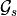 graph.
It is required to respect a strict non overlapping rule. No segments can recover partially or totally an other segment.
This rule allows to capture topological relations of the network which are exploited for further analysis.
To describe doors and windows, the concept of subsegment is introduced.
A segment has attributes :
- name : slab name
- z : tuple of minimum and maximum heights with respect to ground (meters)
- transition : a boolean indicating if a human can cross this segment. For example, segments associated with a door are transition segments but we will see later that it may be judicious to split space with transparent segments which have the name ‘AIR’. Those segments are also transition=True
A subsegment belongs to a segment, it has mainly 2 attached parameters :
- ss_name : subsegment slab name
- ss_z : [(zmin1,zmax1),(zmin2,zmax2),...,(zminK,zmaxK))] list of minimum and maximum heights of associated subsegments (meters)
When appearing in a 3D ray a subsegment has a unique index different from the segment index.
The layout format has regularly evolved over time and is going to evolve again. Currently, the different recognized file extensions are the following :
- .str2: a ASCII file (Node list + edge list)
- .str : a binary file which includes visibility relations between point and segments
- .ini : an ini file which gather node list and edge list as well as the state of the current display dictionnary
- .osm : an xml file which can be edited with JOSM
from pylayers.gis.layout import *
from pylayers.util.project import *
<matplotlib.figure.Figure at 0x5263890>
To read an existing layout it is sufficient to create a Layout object with, as an argument, a file name with one of the recognized extension. All files are stored in the pstruc['DIRSTRUC'] directory of the project. The project root directory is defined in the $BASENAME environment variable.
print pstruc['DIRSTRUC']
struc/str
pstruc is a dictionnary which gathers all directories which are used in PyLayers
pstruc
{'DIRANT': 'ant',
'DIRCIR': 'output',
'DIRFUR': 'struc/furnitures',
'DIRGEOM': 'geom',
'DIRIMAGE': 'struc/images',
'DIRINI': 'struc/ini',
'DIRLCH': 'output',
'DIRMAT': 'ini',
'DIRMAT2': 'ini',
'DIRMES': 'meas',
'DIRNETSAVE': 'netsave',
'DIROSM': 'struc/osm',
'DIRPICKLE': 'struc/gpickle',
'DIRR2D': 'output/r2d',
'DIRR3D': 'output/r3d',
'DIRSIG': 'output/sig',
'DIRSIMUL': 'ini',
'DIRSLAB': 'ini',
'DIRSLAB2': 'ini',
'DIRSTRUC': 'struc/str',
'DIRSTRUC2': 'struc/str',
'DIRTRA': 'output',
'DIRTUD': 'output',
'DIRTx': 'output/Tx001',
'DIRWRL': 'struc/wrl'}
The structure of the .osm file is shown below
%%bash
cd $BASENAME/struc
ls *.osm
DLR.osm
%%bash
cd $BASENAME/struc
head DLR.osm
echo '---'
tail -17 DLR.osm
<?xml version='1.0' encoding='UTF-8'?>
<osm version='0.6' upload='false' generator='PyLayers'>
<node id='-212' action='modify' visible='true' lat='47.0100855114' lon='-1.98980710934' />
<node id='-210' action='modify' visible='true' lat='47.0100789151' lon='-1.9897910381' />
<node id='-208' action='modify' visible='true' lat='47.0100738861' lon='-1.98977878545' />
<node id='-206' action='modify' visible='true' lat='47.0100616861' lon='-1.98982814281' />
<node id='-204' action='modify' visible='true' lat='47.0101583649' lon='-1.98982436917' />
<node id='-202' action='modify' visible='true' lat='47.0101656174' lon='-1.98981796656' />
<node id='-200' action='modify' visible='true' lat='47.0101843662' lon='-1.98977935424' />
<node id='-198' action='modify' visible='true' lat='47.0101791636' lon='-1.98982426816' />
---
<tag k='transition' v='False' />
</way>
<way id='-10000123' action='modify' visible='true'>
<nd ref='-200' />
<nd ref='-100' />
<tag k='name' v='WALL' />
<tag k='z' v="('0.0', '3.0')" />
<tag k='transition' v='False' />
</way>
<way id='-10000124' action='modify' visible='true'>
<nd ref='-166' />
<nd ref='-188' />
<tag k='name' v='WALL' />
<tag k='z' v="('0.0', '3.0')" />
<tag k='transition' v='False' />
</way>
</osm>
To read a new layout in osm format :
L=Layout('DLR.osm')
fig,ax=L.showGs()

L.info()
filestr : DLR.osm
filematini : matDB.ini
fileslabini : slabDB.ini
filegeom : DLR.off
boundaries (758.35005883924691, 794.77088532257221, 1111.8980005947324, 1138.9865273726507)
number of Points : 105
number of Segments : 124
number of Sub-Segments : 30
Gs Nodes : 229
Gs Edges : 248
Gt Nodes : 0
Gt Edges : 0
vnodes = Gt.node[Nc]['cycles'].cycle
poly = Gt.node[Nc]['cycle'].polyg
Gr Nodes : 0
Gr Edges : 0
Nc = Gr.node[nroom]['cycles']
The different graphs associated with the layout are then built
L.build()
The topological graph 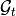 or graph of non overlapping cycles.
f,a=L.showG('t')
b=plt.axis('off')

The graph of room 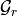. Two rooms which share at least a wall are connected. Two rooms which share only a corner (punctual connection) are not connected
f,a=L.showG('r')
b=plt.axis('off')

The graph of waypath  . This graph is used for agent
mobility. This allows to determine the shortest path between 2 rooms.
This information could be included in the osm file. This is not the case
yet
. This graph is used for agent
mobility. This allows to determine the shortest path between 2 rooms.
This information could be included in the osm file. This is not the case
yet
f,a=L.showG('w')
b=plt.axis('off')

The graph of visibility 
f,a=L.showG('v')
b=plt.axis('off')

The graph of interactions 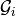 used to determine the ray signatures.
f=plt.figure(figsize=(15,15))
a = f.gca()
f,a=L.showG('i',fig=f,ax=a)
b= plt.axis('off')
L.info()
filestr : DLR.osm
filematini : matDB.ini
fileslabini : slabDB.ini
filegeom : DLR.off
boundaries (758.35005883924691, 794.77088532257221, 1111.8980005947324, 1138.9865273726507)
number of Points : 105
number of Segments : 124
number of Sub-Segments : 30
Gs Nodes : 229
Gs Edges : 248
Gt Nodes : 20
Gt Edges : 48
vnodes = Gt.node[Nc]['cycles'].cycle
poly = Gt.node[Nc]['cycle'].polyg
Gr Nodes : 16
Gr Edges : 16
Nc = Gr.node[nroom]['cycles']
The layout can be displayed using matplotlib ploting primitive. Several display options are specified in the display dictionnary. Those options are exploited in showGs() vizualisation method.
L.display
{'activelayer': 'WINDOW_GLASS',
'alpha': 0.5,
'box': (-20, 20, -10, 10),
'clear': False,
'edges': True,
'edlabel': False,
'edlblsize': 20,
'ednodes': False,
'fileoverlay': 'TA-Office.png',
'fontsize': 20,
'inverse': False,
'layer': [],
'layers': ['WALL', 'PARTITION', 'AIR', '3D_WINDOW_GLASS'],
'layerset': ['WINDOW_GLASS',
'PLASTERBOARD_7CM',
'WALL',
'AIR',
'WINDOW',
'METALIC',
'PLASTERBOARD_14CM',
'DOOR',
'FLOOR',
'METAL',
'PARTITION',
'CONCRETE_20CM3D',
'PLASTERBOARD_10CM',
'CEIL',
'CONCRETE_6CM3D',
'CONCRETE_15CM3D',
'3D_WINDOW_GLASS',
'WALLS',
'WOOD',
'CONCRETE_7CM3D',
'PILLAR',
'ABSORBENT'],
'ndlabel': False,
'ndlblsize': 20,
'ndsize': 10,
'nodes': False,
'overlay': False,
'scaled': True,
'subseg': True,
'thin': False,
'ticksoff': True,
'title': '',
'visu': False}
- ‘layer’ : list , []
- ‘layerset’,list, list of available layers
- ‘layers’, list , []
- ‘activelayer’, str , ‘WINDOW_GLASS’
- ‘alpha’, float , 0.5 , overlay transparency
- ‘box’, tuple , (-20,20,-10,10), (xmin xmax,ymin,ymax)
- ‘title’ : str , ‘Init’
- ‘fileoverlay’ : str , ‘TA-Office.png’
- ‘fontsize’, float , 10
- ‘ndsize’, float , 10
- ‘ndlblsize’ : float 20
- ‘edlblsize’ : float , 20
- ‘edlabel’, boolean, False
- ‘ticksoff’,boolean, True
- ‘scaled’ : boolean , True
- ‘subseg’ : boolean , True
- ‘nodes’, boolean , True
- ‘visu’, boolean , False
- ‘edges’, boolean , True
- ‘clear’, boolean, False
- ‘overlay’, boolean , False
- ‘thin’, boolean , False , If True trace all segments with thickness 1
- ‘ndlabel’,boolean, If True display node labels
- ‘ednodes’, boolean, True
The command L.editor() launches an interactive editor. The state machine is implemented in module pylayers.gis.selectl.py.
To have an idea of all available options, look in the `pylayers.gis.SelectL <http://pylayers.github.io/pylayers/_modules/pylayers/gis/selectl.html#SelectL.new_state>`__ module
All bug correction and ergonomic improvement of this editor is welcome. Just pull request your modifications.
PyLayers comes along with a low level structure editor based on matplotlib which can be invoqued using the editor() method. This editor is more suited for modyfing constitutive properties of walls. In the future a dedicated plugin in JOSM could be a much better solution.
There are two different modes of edition
- A create points mode CP
- left clic : free point
- right clic : same x point
- center clic : same y point
- A create segments mode
- left clic : select point 1
- left clic : select point 2
- left clic : create a segment between point 1 and point 2
m : to switch from one mode to an other
i : to return to init state
It is useful while editing a layout to have an overlay of an image in order to help placing points. The image overlay can either be an url or a filename. In that case the file is stored in
L=Layout()
L.display['fileoverlay']='http://images.wikia.com/theoffice/images/9/9e/Layout.jpg'
L.display['overlay']=True
L.display['alpha']=1
L.display['scaled']=False
L.display['ticksoff']=False
L.display['inverse']=True
plt.figure(figsize=(10,10))
L.showGs()
(<matplotlib.figure.Figure at 0x53b7d50>,
<matplotlib.axes.AxesSubplot at 0x53b7cd0>)

Before going further it is necessary :
- to place the global origin
- to precise the vertical and horizontal scale of the image
This is done by the following commands :
- ‘i’ : back to init state
- ‘m’ : goes to CP state
- ‘o’ : define the origin
- ‘left click’ on the point of the figure chasen as the origin
- ‘left click’ on a point at a known distance from the origin along x axis. Fill the dialog box with the actual distance (expressed in meters) between the two points.
- ‘left click’ on a point at a known distance from the origin along y axis. Fill the dialog box with the actual distance (expressed in meters) between the two points.
In that sequence of operation it is useful to rescale the figure with ‘r’.
At that stage, it is possible to start creating points
'b' : selct a segment
'l' : select activelayer
'i' : back to init state
'e' : edit segment
't' : translate structure
'h' : add subsegment
'd' : delete subsegment
'r' : refresh
'o' : toggle overlay
'm' : toggle mode (point or segment)
'z' : change display parameters
'q' : quit interactive mode
'x' : save .str2 file
'w' : display all layers
L = Layout('TA-Office.ini')
L.dumpr()
fig = plt.figure(figsize=(25,25))
ax = fig.gca()
fig,ax = L.showG(fig=fig,ax=ax,graph='s',labels=True,font_size=9,node_size=220,node_color='c')
a = plt.axis('off')

Each node of with a negative index is a point.
Each node of with a positive index corresponds to a segment (wall,door,window,...).
The segment name is the key of the slab dictionnary.
from pylayers.simul.simulem import *
from pylayers.antprop.rays import *
from pylayers.gis.layout import *
from pylayers.antprop.signature import *
import pylayers.signal.bsignal as bs
import pylayers.signal.waveform as wvf
from pylayers.simul.simulem import *
import matplotlib.pyplot as plt
<matplotlib.figure.Figure at 0x3dff890>
S = Simul()
filestr = 'defstr3'
S.layout(filestr+'.ini','matDB.ini','slabDB.ini')
The studied configuration is composed of a simple 2 rooms building separated by a subsegment which has a multi subsegment attribute. The attribute of the subsegment can be changed with the method chgmss (change multisubsegment)
S.L.chgmss(1,ss_name=['WOOD','AIR','WOOD'],ss_z =[(0.0,2.7),(2.7,2.8),(2.8,3)])
S.L.build()
S.L.save()
structure saved in defstr3.str2
structure saved in defstr3.ini
The graph dictionnary has the following structure
S.L.Gs.node
{-8: {},
-7: {},
-6: {},
-5: {},
-4: {},
-3: {},
-2: {},
-1: {},
1: {'connect': [-8, -7],
'name': 'PARTITION',
'ncycles': [0, 1],
'norm': array([-0.999982 , -0.00599989, 0. ]),
'ss_name': ['WOOD', 'AIR', 'WOOD'],
'ss_z': [(0.0, 2.7), (2.7, 2.8), (2.8, 3)],
'transition': True,
'z': (0.0, 3.0)},
2: {'connect': [-8, -2],
'name': 'WALL',
'ncycles': [0, 1],
'norm': array([ 0.99997778, 0.00666652, 0. ]),
'transition': False,
'z': (0.0, 3.0)},
3: {'connect': [-7, -5],
'name': 'WALL',
'ncycles': [0, 1],
'norm': array([-0.99997775, -0.00667097, 0. ]),
'transition': False,
'z': (0.0, 3.0)},
4: {'connect': [-6, -1],
'name': 'WALL',
'ncycles': [1],
'norm': array([ 0.99997888, 0.00649986, 0. ]),
'transition': False,
'z': (0.0, 3.0)},
5: {'connect': [-6, -5],
'name': 'WALL',
'ncycles': [1],
'norm': array([-0.00619988, 0.99998078, 0. ]),
'transition': False,
'z': (0.0, 3.0)},
6: {'connect': [-5, -4],
'name': 'WALL',
'ncycles': [0],
'norm': array([-0.00639987, 0.99997952, 0. ]),
'transition': False,
'z': (0.0, 3.0)},
7: {'connect': [-4, -3],
'name': 'WALL',
'ncycles': [0],
'norm': array([ 0.99997887, 0.00650149, 0. ]),
'transition': False,
'z': (0.0, 3.0)},
8: {'connect': [-3, -2],
'name': 'WALL',
'ncycles': [0],
'norm': array([ 0.00639987, -0.99997952, 0. ]),
'transition': False,
'z': (0.0, 3.0)},
9: {'connect': [-2, -1],
'name': 'WALL',
'ncycles': [1],
'norm': array([ 0.00639987, -0.99997952, 0. ]),
'transition': False,
'z': (0.0, 3.0)}}
S.info()
default.ini
------------------------------------------
Layout Info :
filestr : defstr3.ini
filematini : matDB.ini
fileslabini : slabDB.ini
filegeom : defstr3.off
boundaries (758.49, 768.516, 1111.9, 1115.963)
number of Points : 8
number of Segments : 9
number of Sub-Segments : 3
Gs Nodes : 17
Gs Edges : 18
Gt Nodes : 2
Gt Edges : 1
vnodes = Gt.node[Nc]['cycles'].cycle
poly = Gt.node[Nc]['cycle'].polyg
Gr Nodes : 2
Gr Edges : 1
Nc = Gr.node[nroom]['cycles']
None
Tx Info :
npos : 2
position : [[ 0. 19.52 ]
[ 0. -0.69 ]
[ 0. 1.446]]
name :
type : tx
fileini : radiotx.ini
filespa : radiotx.spa
filegeom : radiotx.vect
fileant : defant.vsh3
filestr : defstr.str2
None
Rx Info :
npos : 350
position : [[ 0. 0.1 0.2 ..., 28.9 28.9 28.9 ]
[ 0. 0. 0. ..., 5.7 5.8 5.9 ]
[ 1.275 1.275 1.275 ..., 1.275 1.275 1.275]]
name :
type : rx
fileini : radiorx.ini
filespa : radiorx.spa
filegeom : radiorx.vect
fileant : defant.vsh3
filestr : defstr.str2
None
S.tx.clear()
S.rx.clear()
#
tx=np.array([759,1114,1.0])
rx=np.array([767,1114,1.5])
#
S.tx.point(tx)
S.rx.point(rx)
# getting cycles from tx
ctx = S.L.pt2cy(S.tx.position[:,0])
# getting cycles from rx
crx = S.L.pt2cy(S.rx.position[:,0])
f,a = S.show()
Warning : no furniture file loaded
fGHz=np.arange(2,6,0.5)
wav = wvf.Waveform(fcGHz=4,bandGHz=1.5)
wav.show()

The different steps are :
- determine the signatures
- determine the 2d rays
- determine the 3d rays
- determine local basis on 3D rays
- fill interactions
Si = Signatures(S.L,ctx,crx)
Si.run4(cutoff=5)
r2d = Si.rays(tx,rx)
r3d = r2d.to3D(S.L)
r3d.locbas(S.L)
r3d.fillinter(S.L)
5.1. Channel variability due to different Layout constitutive materials¶
r3d
Rays3D
----------
1 / 1 : [0]
2 / 6 : [1 2 3 4 5 6]
3 / 18 : [ 7 8 9 10 11 12 13 14 15 16 17 18 19 20 21 22 23 24]
4 / 38 : [25 26 27 28 29 30 31 32 33 34 35 36 37 38 39 40 41 42 43 44 45 46 47 48 49
50 51 52 53 54 55 56 57 58 59 60 61 62]
5 / 59 : [ 63 64 65 66 67 68 69 70 71 72 73 74 75 76 77 78 79 80
81 82 83 84 85 86 87 88 89 90 91 92 93 94 95 96 97 98
99 100 101 102 103 104 105 106 107 108 109 110 111 112 113 114 115 116
117 118 119 120 121]
6 / 80 : [122 123 124 125 126 127 128 129 130 131 132 133 134 135 136 137 138 139
140 141 142 143 144 145 146 147 148 149 150 151 152 153 154 155 156 157
158 159 160 161 162 163 164 165 166 167 168 169 170 171 172 173 174 175
176 177 178 179 180 181 182 183 184 185 186 187 188 189 190 191 192 193
194 195 196 197 198 199 200 201]
7 / 74 : [202 203 204 205 206 207 208 209 210 211 212 213 214 215 216 217 218 219
220 221 222 223 224 225 226 227 228 229 230 231 232 233 234 235 236 237
238 239 240 241 242 243 244 245 246 247 248 249 250 251 252 253 254 255
256 257 258 259 260 261 262 263 264 265 266 267 268 269 270 271 272 273
274 275]
8 / 44 : [276 277 278 279 280 281 282 283 284 285 286 287 288 289 290 291 292 293
294 295 296 297 298 299 300 301 302 303 304 305 306 307 308 309 310 311
312 313 314 315 316 317 318 319]
-----
ni : 1864
nl : 4048
layer = ['AIR','AIR','AIR']
S.L.chgmss(1,ss_name=layer)
S.L.Gs.node[1]['ss_name']=layer
S.L.g2npy()
# graph to numpy
r3d.fillinter(S.L,append=True)
Cair = r3d.eval(fGHz)
scair = Cair.prop2tran(a='theta',b='theta')
cirair = scair.applywavB(wav.sfg)
#cirair = evcir(r3d,wav)
fig,ax = cirair.plot(typ=['v'],xmin=20,xmax=60)
title = plt.title(str(layer))
/usr/local/lib/python2.7/dist-packages/matplotlib/axes.py:4747: UserWarning: No labeled objects found. Use label='...' kwarg on individual plots.
warnings.warn("No labeled objects found. "
type(cirair)
pylayers.signal.bsignal.Usignal
layer = ['PARTITION','PARTITION','PARTITION']
S.L.chgmss(1,ss_name=layer)
S.L.Gs.node[1]['ss_name']=layer
S.L.g2npy()
# graph to numpy
r3d.fillinter(S.L,append=True)
Cwood=r3d.eval(fGHz)
scwood=Cwood.prop2tran(a='theta',b='theta')
cirwood = scwood.applywavB(wav.sfg)
cirwood.plot(typ=['v'],xmin=20,xmax=60)
plt.title(str(layer))
<matplotlib.text.Text at 0x7fe8029fb310>
layer = ['METAL','METAL','METAL']
S.L.chgmss(1,ss_name=layer)
S.L.Gs.node[1]['ss_name']=layer
# graph to numpy
S.L.g2npy()
r3d.fillinter(S.L,append=True)
Cmetal=r3d.eval(fGHz)
scmetal=Cmetal.prop2tran(a='theta',b='theta')
cirmetal = scmetal.applywavB(wav.sfg)
cirmetal.plot(typ=['v'],xmin=20,xmax=60)
plt.title(str(layer))
plt.show()
#fig2=plt.figure()
f,a=cirair.plot(typ=['l20'],color='b')
plt.axis([0,120,-120,-40])
plt.title('A simple illustration of shadowing effect')
plt.legend(['air'])
f,a=cirwood.plot(typ=['l20'],color='k')
plt.axis([0,120,-120,-40])
plt.legend(['wood'])
f,a=cirmetal.plot(typ=['l20'],color='r')
plt.axis([0,120,-120,-40])
plt.legend(['metal'])
6. Multi-wall model¶
import time
from pylayers.util.project import *
import pylayers.util.pyutil as pyu
from pylayers.util.utilnet import str2bool
from pylayers.gis.layout import Layout
from pylayers.antprop.multiwall import *
from pylayers.antprop.coverage import *
from pylayers.network.model import *
<matplotlib.figure.Figure at 0x4066890>
The layout is loaded from an ini file. If the graphs are not available, they are built.
L=Layout('TA-Office.ini')
6.1. Defining a radio link¶
The 2 extremities of the radio link are coordinates in numpy.array of transmitter and receiver.
- A a radio node
- B a radio node
A=np.array((4,1)) # defining transmitter position
B=np.array((30,12)) # defining receiver position
6.2. Ploting the scene¶
The scene is plotted with the showG method of the Layout
# figure instanciation
f = plt.figure(figsize=(25,25))
ax = f.add_subplot(111)
r = np.array((A,B))
# plotting the Layout
f,ax = L.showG(fig=f,ax=ax,graph='s',nodes=False)
# plotting the Tx and Rx
ax.plot(A[0],A[1],'ob')
ax.plot(B[0],B[1],'or')
# plotting the LOS
ax.plot(r[:,0],r[:,1])
a = plt.axis('off')
6.2.1. Finding the intersection between the “direct” path and the walls¶
The function angleonlink returns the list of intersected segments and the corresponding incidence angles (in radians) with respect to the segment normal.
%pdef L.angleonlink
[0mL[0m[1;33m.[0m[0mangleonlink[0m[1;33m([0m[0mself[0m[1;33m,[0m [0mp1[0m[1;33m=[0m[0marray[0m[1;33m([0m[1;33m[[0m[1;36m0[0m[1;33m,[0m [1;36m0[0m[1;33m][0m[1;33m)[0m[1;33m,[0m [0mp2[0m[1;33m=[0m[0marray[0m[1;33m([0m[1;33m[[0m[1;36m10[0m[1;33m,[0m [1;36m3[0m[1;33m][0m[1;33m)[0m[1;33m)[0m[1;33m[0m[0m
data=L.angleonlink(A,B)
6.2.2. Computing the Multi-wall model¶
The multi-wall model computation returns losses and LOS excess delay for orthogonal and parallel polarization
fGHz = 2.4
# observation grid
r = np.array((B,B))
Lwo,Lwp,Edo,Edp = Losst(L,fGHz,r.T,A)
print 'Losses orthogonal polarization \t %g dB' %(Lwo[0][0])
print 'Losses parallel polarization \t %g dB' % (Lwp[0][0])
print 'Excess delay orthogonal polarization \t %g ns' %(Edo[0][0])
print 'Excess delay parallel polarization \t %g ns' %(Edp[0][0])
Losses orthogonal polarization 27.7333 dB
Losses parallel polarization 16.0573 dB
Excess delay orthogonal polarization 2.23113 ns
Excess delay parallel polarization 2.12364 ns
7. Coverage class¶
By extension, the multi-wall model can also be used to perform a full coverage of a Layout given a transmitter position.
C = Coverage()
C.L = L # set layout
C.tx = A # set the transmitter
C.L
----------------
TA-Office.ini
Image('/home/uguen/Bureau/P1/struc/images/DLR4991.png')
----------------
Number of points : 71
Number of segments : 87
Number of sub segments : 16
Number of cycles : 0
Number of rooms : 0
degree 0 : []
degree 1 : []
degree 2 : 39
degree 3 : 32
xrange :(0.0, 40.0)
yrange :(0.0, 15.0)
Useful dictionnaries
----------------
sl {slab name : slab dictionary}
name : {slab :seglist}
Useful arrays
----------------
tsg : get segment index in Gs from tahe
isss : sub-segment index above Nsmax
tgs : get segment index in tahe from Gs
lsss : list of segments with sub-segment
sla : list of all slab names (Nsmax+Nss+1)
degree : degree of nodes
C.creategrid()
The coverage is performed on grid. The boundaries can be specified in the coverage.ini file
C.grid
array([[ 1.00000000e-02, 1.00000000e-02],
[ 1.00000000e-02, 3.94102564e-01],
[ 1.00000000e-02, 7.78205128e-01],
...,
[ 3.99900000e+01, 1.42217949e+01],
[ 3.99900000e+01, 1.46058974e+01],
[ 3.99900000e+01, 1.49900000e+01]])
t1=time.time()
C.cover()
t2=time.time()
print 'Coverage performed in ', t2-t1, 's'
Coverage performed in 1.34146499634 s
For Orthogonal polarization
fig1=plt.figure(figsize=(10,10))
C.showPower(polar='o',fig=fig1)
fig2=plt.figure(figsize=(10,10))
C.showEd(polar='o',fig=fig2)
 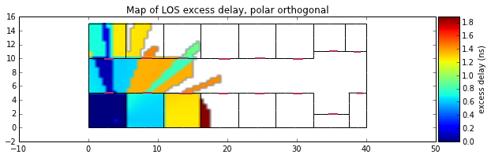
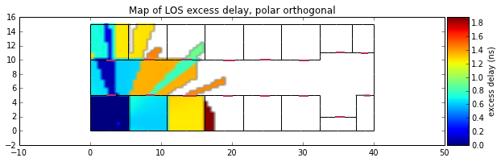
(<matplotlib.figure.Figure at 0x604ca90>,
<matplotlib.axes.AxesSubplot at 0x509af10>)
For parallel polarization
fig1=plt.figure(figsize=(10,10))
C.showPower(polar='p',fig=fig1)
fig2=plt.figure(figsize=(10,10))
C.showEd(polar='p',fig=fig2)
(<matplotlib.figure.Figure at 0x5c6db50>,
<matplotlib.axes.AxesSubplot at 0x61c8bd0>)
from IPython.core.display import HTML
def css_styling():
styles = open("../styles/custom.css", "r").read()
return HTML(styles)
css_styling()
8. Coverage with a Multi Wall model¶
Sometimes it might be useful to get a fast estimate about losses in a given indoor environment. Ray tracing is generally time consuming and depending on the purpose of the study it could be relevant to proceed with a simpler approach while staying site-specific. PyLayers provides such a tool which heavily relies on the core module slab.py
First let’s import the coverage module
from pylayers.antprop.coverage import *
import time
<matplotlib.figure.Figure at 0x47f1890>
Instantiate a coverage object. By defaut, TA-Office.str layout strucure is loaded.
This information can be modified in the coverage.ini file in the project directory.
Below is an example of how the content of the file looks like
!cat $BASENAME/ini/coverage.ini
[pl_model]
sigrss = 3.0
fGHz = 3.0
rssnp = 2.64
d0 = 1.0
[grid]
nx = 80
ny = 40
boundary = [20,0,30,20]
full = True
[layout]
filename = TA-Office.ini
;filename = W2PTIN.ini
;filename = Lstruc.str
[tx]
fGHz = 3.0
x = 25
y = 5
;transmitted power (dBm)
ptdbm = 0
; frame length in bytes
framelengthbytes = 50000
[rx]
sensitivity = -80
bandwidthmhz = 3
temperaturek = 300
noisefactordb = 13
[show]
show = True
# Create a Coverage object from coverag.ini file
C = Coverage()
The coverage object has a __repr__ which summarizes the different parameters of the current coverage object
C
Layout file : TA-Office.ini
-----Tx------
tx (coord) : [25 5]
fghz : 3.0
Pt (dBm) : 0
-----Rx------
rxsens (dBm) : -80
bandwith (Mhz) : 3
temperature (K) : 300
noisefactor (dB) : 13
--- Grid ----
nx : 80
ny : 40
full grid : True
boundary (xmin,ymin,xmax,ymax) : [20, 0, 30, 20]
---- PL Model------
plm : {'fghz': '3.0', 'rssnp': '2.64', 'd0': '1.0', 'sigrss': '3.0'}
# evaluate coverage
C.cover()
9. Calculating Received Power Coverage¶
C.L.display['nodes']=False
C.L.display['ednodes']=False
C.L.showGs()
(<matplotlib.figure.Figure at 0x51ee990>,
<matplotlib.axes.AxesSubplot at 0x522e550>)

Then, the coverage calculation is launched by calling the cover() method
The shadowing map coverage results can be displayed by invoquing various functions.
- showLoss : display the path loss
- showPower : display the received powercover
The following examples represent the estimated received power for 3 different frequencies
C.fGHz=0.400
tic = time.time()
C.cover()
C.showPower(figsize=(10,10))
toc =time.time()
print 'Elapsed time : {0:.2f} seconds'.format(toc-tic)
/usr/local/lib/python2.7/dist-packages/numpy/ma/core.py:3847: UserWarning: Warning: converting a masked element to nan.
warnings.warn("Warning: converting a masked element to nan.")

Elapsed time : 1.07 seconds
C.fGHz=2.4
tic = time.time()
C.cover()
C.showPower(figsize=(10,10))
toc =time.time()
print 'Elapsed time : {0:.2f} seconds'.format(toc-tic)

Elapsed time : 1.07 seconds
C.fGHz=2.4
tic = time.time()
C.cover()
C.showPower(figsize=(10,10))
toc =time.time()
print 'Elapsed time : {0:.2f} seconds'.format(toc-tic)

Elapsed time : 1.07 seconds
The transmitter coordinates are :
C.tx
array([25, 5])
This can be modified on the flight, and the coverage is updated accordingly
C.fGHz=100
C.tx = np.array((21,2))
%timeit
C.cover()
C.showPower(polar='o',figsize=(10,10))
C.showPower(polar='p',figsize=(10,10))

(<matplotlib.figure.Figure at 0x82f8f50>,
<matplotlib.axes.AxesSubplot at 0x62d47d0>)
from IPython.core.display import HTML
def css_styling():
styles = open("../styles/custom.css", "r").read()
return HTML(styles)
css_styling()
The excess delay due to crossing the wall can also be evaluted.
10. Ray Signatures¶
import time
from pylayers.gis.layout import *
from pylayers.antprop.signature import *
from pylayers.antprop.rays import *
<matplotlib.figure.Figure at 0x4de5890>
L = Layout('defstr.ini')
try:
L.dumpr()
except:
L.build()
L.dumpw()
Showing the graph of rooms with 2 rooms separated by a DOOR segment
L.showG('v')
a=plt.axis('off')

The graph of interactions is shown below.
L.showG('i',figsize=(20,20))
a=plt.axis('off')
All the interactions of a given cycle are stored as meta information in nodes of Gt
L.Gt.node[0]['inter']
['(3, 0)',
'(4, 0)',
'(7, 0)',
'(7, 0, 1)',
'(7, 1, 0)',
'(9, 0)',
'(9, 0, 1)',
'(9, 1, 0)',
'(8, 0)',
'(8, 0, 1)',
'(8, 1, 0)',
'(2, 0)']
The signature is calculated with as parameters the Layout object and two cycle numbers. In example below it is 0 and 1.
Si = Signatures(L,0,1)
The cold start determination of the signature is done with a run function. The code is not in its final shape here and there is room for significant acceleration in incorporating propagation based heuristics. The mitigation of graph exploration depth is done in setting a cutoff value which limits the exploration in the interaction graph.
Si.run4(cutoff=5)
The representation method of a signature gives varous informations about the different signatures. Signatures are grouped by number of interactions.
L.Gt.pos
{0: (7.5, 0.0), 1: (2.5, -0.0)}
ptx = np.array(L.Gt.pos[0])+np.random.rand(2)
prx = np.array(L.Gt.pos[1])+np.random.rand(2)
print ptx
print prx
[ 8.35174751 0.30020702]
[ 3.43281369 0.44106546]
from IPython.core.display import HTML
def css_styling():
styles = open("../styles/custom.css", "r").read()
return HTML(styles)
css_styling()
10.1. Synthesis of Ultra Wide Band Waveforms¶
Once the propagation channel has been evaluated. This is done in the pylayers.antprop.channel module. The received signal is evaluated in applying a convolution product of each ray tranfer function with a specific IR-UWB waveform. The necessary modules are
- pylayers.signal.bsignal.
- pylayers.signal.waveform
- pylayers.signal.channel
The module pylayers.simul.simulem is for definition of electromagnetic simulation.
from pylayers.signal.bsignal import *
from pylayers.signal.waveform import *
from pylayers.antprop.channel import *
from pylayers.simul.simulem import *
<matplotlib.figure.Figure at 0x3c44890>
10.1.1. Generation of an Impulse of normalized energy¶
One possible manner to define an energy normalized short UWB impulse is as follows using bsignal.EnImpulse function.
The default waveform is a gaussian windowing of a sine wave of frequency
 . The normalization term depends on the exponential scaling
factor
. The normalization term depends on the exponential scaling
factor  .
.


where  is the desired bandwidth defined at
is the desired bandwidth defined at  below the spectrum maximum and is the central frequency of
the pulse.
below the spectrum maximum and is the central frequency of
the pulse.
fc = 4
band = 2
thresh = 10
fe = 100
ip = EnImpulse([],fc,band,thresh,fe)
ip.info()
TUsignal
--------
shx : (343,)
shy : (343,)
dx : 0.01
xmin : -1.71
xmax : 1.71
ymin : -1.89545539648
ymax : 2.16154131873
10.2. Verification of energy normalization in both domains¶
E1= sum(ip.y*ip.y)*ip.dx()
print "Integration in time",E1
Integration in time 1.0
P = ip.esd()
E2 = sum(P.y)*P.dx()
print "Integration in frequency domain ",E2
Integration in frequency domain 1.0
10.3. Calculation of UWB channel impulse response¶
We choose to load a simple floor plan.
S = Simul()
S.L = Layout('defstr3.ini')
A simulation object has an info method providing a summary of simulation informations.
S.info()
default.ini
------------------------------------------
Layout Info :
filestr : defstr3.ini
filematini : matDB.ini
fileslabini : slabDB.ini
filegeom : defstr3.off
boundaries (758.49, 768.516, 1111.9, 1115.963)
number of Points : 8
number of Segments : 9
number of Sub-Segments : 3
Gs Nodes : 17
Gs Edges : 18
Gt Nodes : 0
Gt Edges : 0
vnodes = Gt.node[Nc]['cycles'].cycle
poly = Gt.node[Nc]['cycle'].polyg
Gr Nodes : 0
Gr Edges : 0
Nc = Gr.node[nroom]['cycles']
None
Tx Info :
npos : 1
position : [[ 7.59000000e+02]
[ 1.11400000e+03]
[ 1.00000000e+00]]
name :
type : tx
fileini : radiotx.ini
filespa : radiotx.spa
filegeom : radiotx.off
fileant : defant.vsh3
filestr : defstr.str2
None
Rx Info :
npos : 1
position : [[ 767. ]
[ 1114. ]
[ 1.5]]
name :
type : rx
fileini : radiorx.ini
filespa : radiorx.spa
filegeom : radiorx.off
fileant : defant.vsh3
filestr : defstr.str2
None
S.L.Gs.node
{-8: {},
-7: {},
-6: {},
-5: {},
-4: {},
-3: {},
-2: {},
-1: {},
1: {'connect': [-8, -7],
'name': 'PARTITION',
'ncycles': [0, 1],
'norm': array([-0.999982 , -0.00599989, 0. ]),
'ss_name': ['WOOD', 'AIR', 'WOOD'],
'ss_z': [(0.0, 2.7), (2.7, 2.8), (2.8, 3)],
'transition': True,
'z': (0.0, 3.0)},
2: {'connect': [-8, -2],
'name': 'WALL',
'ncycles': [0, 1],
'norm': array([ 0.99997778, 0.00666652, 0. ]),
'transition': False,
'z': (0.0, 3.0)},
3: {'connect': [-7, -5],
'name': 'WALL',
'ncycles': [0, 1],
'norm': array([-0.99997775, -0.00667097, 0. ]),
'transition': False,
'z': (0.0, 3.0)},
4: {'connect': [-6, -1],
'name': 'WALL',
'ncycles': [1],
'norm': array([ 0.99997888, 0.00649986, 0. ]),
'transition': False,
'z': (0.0, 3.0)},
5: {'connect': [-6, -5],
'name': 'WALL',
'ncycles': [1],
'norm': array([-0.00619988, 0.99998078, 0. ]),
'transition': False,
'z': (0.0, 3.0)},
6: {'connect': [-5, -4],
'name': 'WALL',
'ncycles': [0],
'norm': array([-0.00639987, 0.99997952, 0. ]),
'transition': False,
'z': (0.0, 3.0)},
7: {'connect': [-4, -3],
'name': 'WALL',
'ncycles': [0],
'norm': array([ 0.99997887, 0.00650149, 0. ]),
'transition': False,
'z': (0.0, 3.0)},
8: {'connect': [-3, -2],
'name': 'WALL',
'ncycles': [0],
'norm': array([ 0.00639987, -0.99997952, 0. ]),
'transition': False,
'z': (0.0, 3.0)},
9: {'connect': [-2, -1],
'name': 'WALL',
'ncycles': [1],
'norm': array([-0.00639987, 0.99997952, 0. ]),
'transition': False,
'z': (0.0, 3.0)}}
st = S.wav.st
sf = S.wav.sf
S.wav.info()
fcGHz : 4.493
typ : generic
feGHz : 100
Np : 3000
twns : 30
te : 0.01
threshdB : 3
bandGHz : 0.499
The waveform associated with the simulation object is
S.wav
{'Np': 3000,
'bandGHz': 0.499,
'fcGHz': 4.493,
'feGHz': 100,
'te': 0.01,
'threshdB': 3,
'twns': 30,
'typ': 'generic'}
S.wav.show()

Above the waveform is a generic UWB waveform. The interested user can add easyly any other mathematical expression of UWB waveform for investigation on pulse waveform modulation for example. The waveform can also comes from measurement. For now there are two version of this waveform which has been used during the M1 measurement campaign. One is not compensated W1compensate for an extra short delay which can introduse a bias when interpretating the observed delay in terms of distance. The non compensated version is W1offset from the time origin about 0.7 ns.
The waveform class should grow for incorporating more waveforms, especially waveforms compliants with the current IEEE 802.15.4a and IEEE 802.15.6 standards.
wavmeasured = Waveform(typ='W1compensate')
wavmeasured.show()
wavmeasured = Waveform(typ='W1offset')
wavmeasured.show()

Here the time domain waveform is measured and the anticausal part of the signal is artificially set to 0.
To handle properly the time domain wavefom in PyLayers, it is required to center the signal in the middle of the array. The waveform has embedded in the object its frequency domain and time domain representation.
- st member stands for signal in time domain
- sf member stands for signal in frequency domain
print type(S.wav.sf)
print type(S.wav.st)
<class 'pylayers.signal.bsignal.FUsignal'>
<class 'pylayers.signal.bsignal.EnImpulse'>
- FUsignal Frequency domain uniformly sampled base signal
- TUsignal Time domain uniformly sampled base signal
10.4. Construction of the propagation channel¶
The following representation shows the spatial spreading of the propagation channel. On the left are scattered the intensity of rays wrt to angles of departure (in azimut and elevation). On the right is the intensity of rays wrt to angles of arrival. It misses the application between the 2 planes as well as the delay dimension of the propagation channel.
from pylayers.antprop.signature import *
from pylayers.antprop.channel import *
S.L.build()
S.L
----------------
defstr3.ini
Image('/home/uguen/Bureau/P1/struc/images/TA-Office.png')
----------------
Number of points : 8
Number of segments : 9
Number of sub segments : 3
Number of cycles : 2
Number of rooms : 2
degree 0 : []
degree 1 : [-8 -7]
degree 2 : 4
degree 3 : 2
xrange :(758.49, 768.516)
yrange :(1111.9, 1115.963)
Useful dictionnaries
----------------
di {interaction : [nstr,typi]}
sl {slab name : slab dictionary}
name : {slab :seglist}
Useful arrays
----------------
tsg : get segment index in Gs from tahe
isss : sub-segment index above Nsmax
tgs : get segment index in tahe from Gs
lsss : list of segments with sub-segment
sla : list of all slab names (Nsmax+Nss+1)
degree : degree of nodes
S.L.Gt.pos
{0: (766.00300113353387, 1113.947479109665),
1: (761.00289669547806, 1113.915769812613)}
tx=np.array([759,1114,1.0])
rx=np.array([767,1114,1.5])
ctx = S.L.pt2cy(tx)
crx = S.L.pt2cy(rx)
The sequence of command below :
- initialize a signature between cycle ctx and cycle crx
- evaluates the signature with a given cutoff value
- calculates a set of 2D rays from signature and tx/rx coordinates
- calculates a set of 3D ray from 2D rays and layout and ceil height (default H=3m)
- calculates local basis and various geometric information out of the 3D ray and Layout
- fill and reorganize the interactions object with proper material chararcteristics
Si = Signatures(S.L,ctx,crx)
Si.run4(cutoff=5)
r2d = Si.rays(tx,rx)
r3d = r2d.to3D(S.L)
r3d.locbas(S.L)
r3d.fillinter(S.L)
Define a frequency base in GHz.
fGHz = np.arange(2,10,0.01)
Evaluate the propagation channel 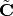. Here the meaning of tilde is that the complex value of the channel do not include the phase term due to delay along the ray.
C = r3d.eval(fGHz)
print type(C)
<class 'pylayers.antprop.channel.Ctilde'>
10.5. Construction of the transmission channel¶
The transmission channel is obtained from the combination of the propagation channel and the vector antenna pattern at both side of the radio link. This operation is implemented in the prop2tran method of the Ctilde class.
sc = C.prop2tran()
The ScalChannel object contains all the information about the ray transfer functions. The transmission channel is obtained by applying a vector radiation pattern using an antenna file.
In the presented case, it comes from a real antenna which has been used during the FP7 project WHERE1 measurement campaign M1.
sc
freq :2.0 9.99 800
shape :(315, 800)
tau :26.7186992365 105.599656025
dist :8.01560977094 31.6798968075
The antenna radiation pattern is stored in a very compact way thanks to Vector Spherical Harmonics decomposition. The following gives information about the content of the antenna object.
S.tx.A.info()
defant.vsh3
type : vsh3
No vsh coefficient calculated yet
The figure below plot on a same graph all the tansfer function in modulus and phase of the ray transfer function.
If a realistic antenna is applied it gives
sca = C.prop2tran(S.tx.A,S.rx.A)
10.6. Calculate UWB Channel Impulse Response¶
Once the transmission channel has been evaluated on can convolved the waveform with the channel impulse response to get the received waveform.
r = sca.applywavB(S.wav.sfg)
r.y
array([ 0.00000000e+00, 0.00000000e+00, 0.00000000e+00, ...,
-2.06305673e-12, -2.85965052e-13, 6.80134567e-13])
fig,ax = r.plot(typ=['l20'])
plt.axis([15,90,-90,-20])
plt.title(u'Received Waveform $r(t)$')
/usr/local/lib/python2.7/dist-packages/matplotlib/axes.py:4747: UserWarning: No labeled objects found. Use label='...' kwarg on individual plots.
warnings.warn("No labeled objects found. "
<matplotlib.text.Text at 0x4cc2750>
r.plot(typ=['v'])
plt.axis([15,60,-0.3
,0.3])
plt.title(u'Received Waveform $r(t)$')
<matplotlib.text.Text at 0x7f6c579f1e90>
10.7. Hermitian symetry enforcment¶
If the number of point for the transmission channel and the waveform
were the same the mathematical operation is an Hadamrd-Shur product
between  and
and  .
.
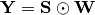
In practice this is what is done after a resampling of the time base with a reinterpolated time step.
The process which consists in going from time domain to frequency domain is delegated to a specialized class pylayers.signal.bsignal.Bsignal which maintains the proper binding between signal samples and their indexation either in time or in frequency domain.
wgam = S.wav.sfg
Y = sc.apply(wgam)
tau = Y.tau0
dod = Y.dod
doa = Y.doa
The transmission channel has a member data which is the time delay of each path in nano seconds. Notice that by default those delay are not sorted.
print 'tau =', tau[0:20]
tau = [ 26.71869924 27.93842436 29.10708199 29.64889324 30.03048589
30.075433 36.72255959 30.75261837 31.12068041 31.1640552
31.81807982 32.17395555 32.21591227 32.36081306 32.66533294
33.05244038 34.35921355 37.6193175 37.86521462 38.49519081]
h = hist(tau,20)
Direction of arrival  in radians
in radians
print "doa = ", doa[1:10,:]
doa = [[ 1.8736812 -3.14159265]
[ 1.15838589 -3.14159265]
[ 1.62703943 2.69865609]
[ 1.62632401 -3.14087348]
[ 1.62624094 -2.65738656]
[ 1.61619728 0.01122758]
[ 1.84520693 2.69865609]
[ 1.84187905 -3.14087348]
[ 1.84149225 -2.65738656]]
subplot(221)
ht = hist(doa[:,0],20)
xlabel(u'$\\theta_r$')
ylabel('#')
subplot(222)
hp = hist(doa[:,1],20)
xlabel(u'$\phi_r$')
ylabel('#')
subplot(223)
ht = hist(dod[:,0],20)
xlabel(u'$\\theta_t$')
ylabel('#')
subplot(224)
hp = hist(dod[:,1],20)
xlabel(u'$\phi_t$')
ylabel('#')
tight_layout()
symHz force the Hermitian symetry of Y with as an argument here a zero padding of 500 points
UH = Y.symHz(500)
#%psource Y.symHz
uh = UH.ifft(1)
ips = Y.ift(500,1)
t = ips.x
ip0 = TUsignal(t,ips.y[0,:])
plot(UH.x,real(UH.y[0,:]),UH.x,imag(UH.y[0,:]))
legend(['Re','Im'])
U0 = FHsignal(UH.x,UH.y[0,:])
u0 = U0.ifft(1)
u1 = ifft(U0.y)
title('checking Hermitian Symetry in frequency domain fc=4.49GHz')
xlabel('f (GHz)')
<matplotlib.text.Text at 0x51fb750>

The ray channel has been applied to the UWB waveform. Notice the small delay introduced by dielectrics material crossing.
plot(uh.x,uh.y[0,:],S.wav.st.x,S.wav.st.y*0.0012+0.0034)
xlim(-2,2)
ylim(-0.002,0.008)
legend(['Ray channel filtered waveform','Original Waveform *1.2e-3 +0.0034'])
xlabel('Time (ns)')
title('Inverse Fourier Transform of an FH signal')
tight_layout()
11. Example of an UWB channel Ray Tracing simulation¶
In the following, all steps required for going from the descrpition of the radio scene until the calculation of the UWB channel impulse response is described on a simple example.
A ray-tracing simulation is controlled via a configuration file which is stored in the ini directory of the project directory. By default, a default configuration file named default.ini is loaded.
from pylayers.simul.simulem import *
from pylayers.antprop.rays import *
from pylayers.antprop.channel import *
from pylayers.antprop.signature import *
from pylayers.measures.mesuwb import *
import pylayers.util.pyutil as pyu
import pylayers.signal.bsignal as bs
<matplotlib.figure.Figure at 0x37c6890>
A first step consists in loading a layout associated with the simulation. Here the WHERE1.ini layout is chosen along with the corresponding slabs and materials files matDB.ini and slabDB.ini.
This layout corresponds to the office building where the first WHERE1 UWB measurement campaign has been conducted.
The layout method loads those in a member layout object L of the simulation object S.
If not already available, the layout associated graphs are built.
S = Simul()
# loading a layout
filestr = 'WHERE1'
S.layout(filestr+'.ini','matDB.ini','slabDB.ini')
try:
S.L.dumpr()
except:
S.L.build()
S.L.dumpw()
The layout display is fully parameterized via the embedded display dictionnary member of the Layout object.which allows to configure the showGs() method behavior.
S.L.display['ednodes']=False
S.L.display['nodes']=False
S.L.display['title']='WHERE1 Project Office Measurement Site'
S.L.display['overlay']=False
fig,ax=S.L.showGs()
11.1. Adding coordinates of transmiting and receiving points¶
Coordinates of transmitters and receivers for the simulation are stored
in .ini files. Transmitter and Receiver are instances of the class
RadioNode which offers different methods for specifying nodes positions.
The stucture of this .ini file presented below. The node Id is
associated with the 3 coordinates  separated by white
spaces.
separated by white
spaces.
[coordinates]
1 = -12.2724 7.76319999993 1.2
2 = -18.7747 15.1779999998 1.2
3 = -4.14179999998 8.86029999983 1.2
4 = -9.09139999998 15.1899000001 1.2
S.tx = RadioNode(_fileini='w2m1rx.ini',_fileant='defant.vsh3')
S.rx = RadioNode(_fileini='w2m1tx.ini',_fileant='defant.vsh3')
The whole simulation setup can then be displayed using the show method of the Simulation object
fig,ax = S.show()
Warning : no furniture file loaded
The different object of the simulation cans be accessed to obtain different information. Below the number of transmitter and receiver.
print 'number of Tx :',len(S.tx.points.keys())
print 'number of rx :',len(S.rx.points.keys())
number of Tx : 302
number of rx : 4
The decomposition of the layout in a set of disjoint cycles is represented below. Not all cycles are rooms.
fig =plt.figure(figsize=(15,15))
fig,ax=S.L.showG('t',fig=fig)
plt.axis('off')
(-40.0, 40.0, 2.0, 18.0)

fig,ax=S.L.showG('t',labels=True,figsize=(15,15))
plt.axis('off')
(-40.0, 40.0, 2.0, 18.0)

istup = filter(lambda x: type(eval(x))==tuple,S.L.Gi.node.keys())
cy5 = filter(lambda x: eval(x)[1]==5,istup)
print cy5
['(15, 5, 76)', '(12, 5, 4)', '(13, 5, 6)', '(13, 5)', '(12, 5)', '(2, 5, 0)', '(331, 5, 6)', '(4, 5)', '(4, 5, 1)', '(156, 5)', '(15, 5)', '(2, 5)', '(5, 5)', '(156, 5, 75)', '(331, 5)', '(330, 5)', '(329, 5, 0)', '(329, 5)', '(140, 5, 78)']
nx.neighbors(S.L.Gi,'(140, 5, 78)')
['(38, 78)',
'(14, 78)',
'(135, 78, 22)',
'-253',
'-250',
'(32, 78, 76)',
'(42, 78, 21)',
'(36, 78)',
'(37, 78)',
'(36, 78, 2)',
'(32, 78)',
'(14, 78, 76)',
'(38, 78, 2)',
'(43, 78)',
'(42, 78)']
S.L.Gi.edge['(140, 5, 78)']['(38, 78)']
{'output': {'(135, 78, 22)': 0.35579843644453529,
'(140, 78, 5)': 0.20141398602845637,
'(42, 78)': 0.4427875775270072,
'(42, 78, 21)': 0.4427875775270072}}
11.2. Signatures, rays and propagation and transmission channel¶
# Choose Tx and Rx coordinates
itx=10
irx=2
tx= S.tx.points[itx]
rx= S.rx.points[irx]
tx
array([-24.867 , 12.3097, 1.2 ])
A signature is a sequence of layout objects (points and segments) which are involved in a given optical ray, relating the transmiter and the receiver. The signatutre is calculated from a layout cycle to an other layout cycle. This means that is is required first to retrieve the cycle number from point coordinates. This is done thanks to the pt2cy, point to cycle function.
ctx=S.L.pt2cy(tx)
crx=S.L.pt2cy(rx)
print 'tx point belongs to cycle ',ctx
print 'rx point belongs to cycle ',crx
tx point belongs to cycle 5
rx point belongs to cycle 4
Then the signature between cycle 5 and cycle 4 can be calculated. This is done by instantiating a Signature object with a given layout and the 2 cycle number.
The representaion of a signature object provides information about the number of signatures for each number of interactions.
Si = Signatures(S.L,ctx,crx)
Si.run4(cutoff=4,algo='old')
Si
Signatures
----------
from cycle : 5 to cycle 4
1 : 1
[12]
[2]
2 : 21
[ 12 12 12 12 12 12 12 12 12 13 13 331 331 329 5 4 156 15
13 330 2]
[2 2 2 2 2 2 2 2 2 2 2 2 2 1 1 1 1 1 1 1 1]
[ 29 30 16 333 22 328 23 335 334 11 342 11 342 12 12 12 12 12
12 12 12]
[1 1 1 1 1 1 1 1 1 2 2 2 2 2 2 2 2 2 2 2 2]
...
#Si.run4(cutoff=5)
Once the signature has been obtained, 2D rays are calculated with the rays() method of the signature Si. The coordinates of a transmitter and a receiver should be parameters of the function. r2d object has a show and show3 method
tx
array([-24.867 , 12.3097, 1.2 ])
figsize(20,20)
r2d = Si.rays(tx,rx)
S.L.display['ednodes']=False
r2d.show(S.L,figsize=(20,20),nodes=False)
(<matplotlib.figure.Figure at 0x8681f90>,
<matplotlib.axes.AxesSubplot at 0x862fc90>)

r2d
N2Drays : 42
from 24395 signatures
#Rays/#Sig: 0.00172166427547
pTx : [-24.867 12.3097 1.2 ]
pRx : [-18.7747 15.178 1.2 ]
1: [[12]]
2: [[ 12 12 5]
[333 335 12]]
3: [[ 12 12 12 5 5 4 12 13]
[335 335 30 12 12 5 5 12]
[ 12 23 335 333 335 12 12 30]]
4: [[ 12 12 12 5 5 156 12 2]
[335 30 335 12 15 5 5 330]
[283 335 333 335 12 12 12 12]
[335 12 342 12 335 333 335 30]]
5: [[ 12 12 12 12 12 12 12 13 5 5 5 5 15 12 12 12 12 330]
[328 22 30 328 335 30 333 3 12 12 156 330 5 5 5 15 5 12]
[339 339 335 335 283 335 334 13 335 335 12 12 330 331 12 5 12 30]
[ 24 328 283 30 335 333 335 12 283 333 335 334 12 8 335 12 23 21]
[328 24 335 12 12 342 328 30 335 11 23 335 30 342 12 335 335 30]]
6: [[140 140]
[ 38 32]
[135 37]
[ 30 135]
[333 30]
[ 30 333]]
7: [[ 5 330]
[140 140]
[135 38]
[337 135]
[ 46 30]
[319 333]
[335 30]]
# r2d.show3(strucname='WHERE1')
Then, the r2d object is transformed in 3D ray, taking into account the reflection on ceil and floor.
r3d=r2d.to3D(S.L)
# r3d.show3(strucname='WHERE1')
Once the 3D rays are obtained the local basis are determined
r3d.locbas(S.L)
and the the interaction matrices are filled.
r3d.fillinter(S.L)
Below ni is the number of interactions
r3d
Rays3D
----------
1 / 1 : [0]
2 / 5 : [1 2 3 4 5]
3 / 16 : [ 6 7 8 9 10 11 12 13 14 15 16 17 18 19 20 21]
4 / 30 : [22 23 24 25 26 27 28 29 30 31 32 33 34 35 36 37 38 39 40 41 42 43 44 45 46
47 48 49 50 51]
5 / 50 : [ 52 53 54 55 56 57 58 59 60 61 62 63 64 65 66 67 68 69
70 71 72 73 74 75 76 77 78 79 80 81 82 83 84 85 86 87
88 89 90 91 92 93 94 95 96 97 98 99 100 101]
6 / 54 : [102 103 104 105 106 107 108 109 110 111 112 113 114 115 116 117 118 119
120 121 122 123 124 125 126 127 128 129 130 131 132 133 134 135 136 137
138 139 140 141 142 143 144 145 146 147 148 149 150 151 152 153 154 155]
7 / 42 : [156 157 158 159 160 161 162 163 164 165 166 167 168 169 170 171 172 173
174 175 176 177 178 179 180 181 182 183 184 185 186 187 188 189 190 191
192 193 194 195 196 197]
8 / 8 : [198 199 200 201 202 203 204 205]
9 / 4 : [206 207 208 209]
-----
ni : 1147
nl : 2504
6*8+5*18+20*4+13*3+5*2+1
268
11.3. Calulating the Propagation Channel¶
The propagation channel is a Ctilde object. This object can be evaluated for different frequency point thanks to the eval() method with a frequency array as argument.
S.fGHz
array([ 2. , 2.05, 2.1 , 2.15, 2.2 , 2.25, 2.3 , 2.35,
2.4 , 2.45, 2.5 , 2.55, 2.6 , 2.65, 2.7 , 2.75,
2.8 , 2.85, 2.9 , 2.95, 3. , 3.05, 3.1 , 3.15,
3.2 , 3.25, 3.3 , 3.35, 3.4 , 3.45, 3.5 , 3.55,
3.6 , 3.65, 3.7 , 3.75, 3.8 , 3.85, 3.9 , 3.95,
4. , 4.05, 4.1 , 4.15, 4.2 , 4.25, 4.3 , 4.35,
4.4 , 4.45, 4.5 , 4.55, 4.6 , 4.65, 4.7 , 4.75,
4.8 , 4.85, 4.9 , 4.95, 5. , 5.05, 5.1 , 5.15,
5.2 , 5.25, 5.3 , 5.35, 5.4 , 5.45, 5.5 , 5.55,
5.6 , 5.65, 5.7 , 5.75, 5.8 , 5.85, 5.9 , 5.95,
6. , 6.05, 6.1 , 6.15, 6.2 , 6.25, 6.3 , 6.35,
6.4 , 6.45, 6.5 , 6.55, 6.6 , 6.65, 6.7 , 6.75,
6.8 , 6.85, 6.9 , 6.95, 7. , 7.05, 7.1 , 7.15,
7.2 , 7.25, 7.3 , 7.35, 7.4 , 7.45, 7.5 , 7.55,
7.6 , 7.65, 7.7 , 7.75, 7.8 , 7.85, 7.9 , 7.95,
8. , 8.05, 8.1 , 8.15, 8.2 , 8.25, 8.3 , 8.35,
8.4 , 8.45, 8.5 , 8.55, 8.6 , 8.65, 8.7 , 8.75,
8.8 , 8.85, 8.9 , 8.95, 9. , 9.05, 9.1 , 9.15,
9.2 , 9.25, 9.3 , 9.35, 9.4 , 9.45, 9.5 , 9.55,
9.6 , 9.65, 9.7 , 9.75, 9.8 , 9.85, 9.9 , 9.95,
10. , 10.05, 10.1 , 10.15, 10.2 , 10.25, 10.3 , 10.35,
10.4 , 10.45, 10.5 , 10.55, 10.6 , 10.65, 10.7 , 10.75,
10.8 , 10.85, 10.9 , 10.95, 11. ])
Ct = r3d.eval(fGHz=S.fGHz)
print "fmin : ",S.fGHz.min()
print "fmax : ",S.fGHz.max()
print "Nf : ", len(S.fGHz)
fmin : 2.0
fmax : 11.0
Nf : 181
r3d
Rays3D
----------
1 / 1 : [0]
2 / 5 : [1 2 3 4 5]
3 / 16 : [ 6 7 8 9 10 11 12 13 14 15 16 17 18 19 20 21]
4 / 30 : [22 23 24 25 26 27 28 29 30 31 32 33 34 35 36 37 38 39 40 41 42 43 44 45 46
47 48 49 50 51]
5 / 50 : [ 52 53 54 55 56 57 58 59 60 61 62 63 64 65 66 67 68 69
70 71 72 73 74 75 76 77 78 79 80 81 82 83 84 85 86 87
88 89 90 91 92 93 94 95 96 97 98 99 100 101]
6 / 54 : [102 103 104 105 106 107 108 109 110 111 112 113 114 115 116 117 118 119
120 121 122 123 124 125 126 127 128 129 130 131 132 133 134 135 136 137
138 139 140 141 142 143 144 145 146 147 148 149 150 151 152 153 154 155]
7 / 42 : [156 157 158 159 160 161 162 163 164 165 166 167 168 169 170 171 172 173
174 175 176 177 178 179 180 181 182 183 184 185 186 187 188 189 190 191
192 193 194 195 196 197]
8 / 8 : [198 199 200 201 202 203 204 205]
9 / 4 : [206 207 208 209]
-----
ni : 1147
nl : 2504
Ectt,Ecpp,Ectp,Ecpt = Ct.energy()
Eco = Ectt+Ecpp
Ecross = Ectp+Ecpt
plt.plot(Ct.tauk,10*np.log10(Eco),'ob')
plt.plot(Ct.tauk,10*np.log10(Ecross),'or')
plt.xlabel('delay(ns)')
plt.ylabel('path energy (dB)')
plt.legend(('Co-pol','X-pol'))
plt.axis((0,180,-60,20))
(0, 180, -60, 20)
The multipath doa/dod diagram can be obtained via the method doadod. The colorbar corresponds to the total energy of the path.
Ct.doadod(phi=(-180,180))
Ct.info()
Nfreq : 181
Nray : 210
shape Ctt : (210, 181)
shape Ctp : (210, 181)
shape Cpt : (210, 181)
shape Cpp : (210, 181)
11.4. Apply waveform¶
Once the propagation channel is obtained the transmission channel is calculated with the method prop2tran
Ct.freq = S.fGHz
sco = Ct.prop2tran(a='theta',b='theta')
sca = Ct.prop2tran(a=S.tx.A,b=S.rx.A)
The applied waveform which is here loaded from a measurement file, and compensated for a small time shift. It is important for the latter treatment for the applied waveform to be centered on the middle of the array as it is illustrated below.
print mesdir
/home/uguen/data/WHERE1/measures
wav = wvf.Waveform(typ='generic',fcGHz=6,bandGHz=4)
wav.show()

Finally, the received UWB waveform can be synthesize in applyng the waveform to the transmission channel.
ro = sco.applywavB(wav.sfg)
ra = sca.applywavB(wav.sfg)
ro.plot(typ=['v'])
plt.xlabel('delay(ns)')
plt.ylabel('voltage (V)')
plt.title('without antenna')
#plt.axis((0,180,-0.006,0.006))
ra.plot(typ=['v'])
plt.xlabel('delay(ns)')
plt.ylabel('voltage (V)')
plt.title('with antenna')
#plt.axis((0,180,-0.1,0.1))
/usr/local/lib/python2.7/dist-packages/matplotlib/axes.py:4747: UserWarning: No labeled objects found. Use label='...' kwarg on individual plots.
warnings.warn("No labeled objects found. "
<matplotlib.text.Text at 0x605f810>
 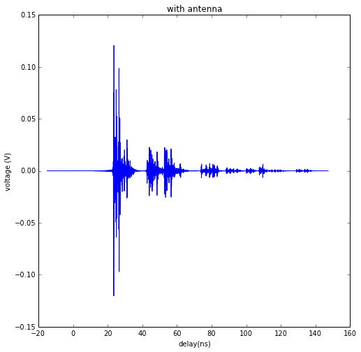
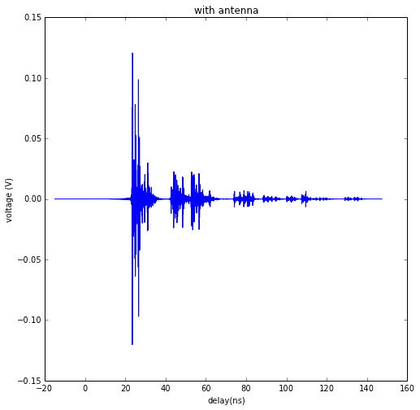
12. Simulation Creation¶
A ray-tracing simulation is controlled via a configuration file which is stored in the ini directory of the project directory. By default, there is a default configuration file named default.ini.
from pylayers.simul.simulem import *
from pylayers.antprop.rays import *
from pylayers.antprop.channel import *
from pylayers.antprop.signature import *
from pylayers.measures.mesuwb import *
import pylayers.util.pyutil as pyu
import pylayers.signal.bsignal as bs
<matplotlib.figure.Figure at 0x4234890>
A first step consists in loading a layout associated with the simulation. Here the WHERE1.ini layout is chosen along with the corresponding slabs and materials.
This layout corresponds to the office building where the first WHERE1 UWB measurement campaign has been conducted.
The layout method loads those in a member layout object L of the simulation object S.
If not already available, the layout associated graphs are built.
S = Simul()
# loading a layout
filestr = 'WHERE1'
S.layout(filestr+'.ini','matDB.ini','slabDB.ini')
try:
S.L.dumpr()
except:
S.L.build()
S.L.dumpw()
S.L.showG('i',figsize=(20,20))
(<matplotlib.figure.Figure at 0x49be910>,
<matplotlib.axes.AxesSubplot at 0x423fb10>)
figsize(20,20)
S.L.showGi(en=7)
axis('off')
int0 : (309, 15, 46)
int1 : (202, 46, 59)
output {'(137, 59, 58)': 0.64242282168494413, '(230, 59, 67)': 0.35757717831506564, '(230, 59)': 0.35757717831506564}
Sum pR : 0.357577178315
Sum pT : 0.642422821685
lseg [137 230]
(-31.123950000000001, 34.74295, 3.6289500000000001, 17.468049999999998)

The layout display is fully parameterized via the embedded display dictionnary member of the Layout object.
figsize(10,10)
S.L.display['ednodes']=False
S.L.display['nodes']=False
S.L.display['title']='WHERE1 Project Office Measurement Site'
S.L.display['overlay']=False
fig,ax=S.L.showGs()

S.L.Gi.edges()[0]
('(309, 15, 46)', '(148, 46, 44)')
12.1. Adding coordinates of transmiting and receiving points¶
Coordinates of transmitters and receivers for the simulation to be
perform are stotred in .ini files. Transmitter and Receiver are
instances of the class RadioNode which offers different methods for
specifying nodes positions. The stucture of this .ini file presented
below. The node Id is associated with the 3 coordinates
separated by white spaces.
[coordinates]
1 = -12.2724 7.76319999993 1.2
2 = -18.7747 15.1779999998 1.2
3 = -4.14179999998 8.86029999983 1.2
4 = -9.09139999998 15.1899000001 1.2
S.tx = RadioNode(_fileini='w2m1rx.ini',_fileant='defant.vsh3')
S.rx = RadioNode(_fileini='w2m1tx.ini',_fileant='defant.vsh3')
The whole simulation setup can then be displayed using the show method of the Simulation object
fig,ax = S.show()
Warning : no furniture file loaded

Select Tx and Rx positions
map={1: 1,2: 2, 3: 3, 4: 5, 5: 6, 6: 7, 7: 8, 8: 9, 9: 10,
10: 11, 11: 12, 12: 13, 13: 14, 14: 15, 15: 16, 16: 17, 17: 18, 18: 19, 19: 20,
20: 21, 21: 22, 22: 23, 23: 24, 24: 25, 25: 26, 26: 27,
27: 28, 28: 29, 29: 30, 30: 32, 31: 33, 32: 34, 33: 35, 34: 36, 35: 37, 36: 38,
37: 39, 38: 40, 39: 41, 40: 42, 41: 43, 42: 44, 43: 45, 44: 46, 45: 47,
46: 48, 47: 49, 48: 50, 49: 51, 50: 52, 51: 53, 52: 54, 53: 55, 54: 56,
55: 57, 56: 58, 57: 59, 58: 60, 59: 61, 60: 62, 61: 63, 62: 64, 63: 65,
64: 66, 65: 67, 66: 68, 67: 69, 68: 70, 69: 71, 70: 72, 71: 73, 72: 74,
73: 75, 74: 76, 75: 77, 76: 78, 77: 79, 78: 80, 79: 81, 80: 82, 81: 83,
82: 84, 83: 85, 84: 89, 85: 90, 86: 91, 87: 92, 88: 93, 89: 94, 90: 95,
91: 96, 92: 97, 93: 98, 94: 99, 95: 100, 96: 101, 97: 103, 98: 104, 99:
105, 100: 106, 101: 107, 102: 108, 103: 109, 104: 110, 105: 111, 106:
113, 107: 114, 108: 116, 109: 117, 110: 119, 111: 120, 112: 122, 113:
123, 114: 124, 115: 125, 116: 126, 117: 127, 118: 128, 119: 129, 120:
133, 121: 134, 122: 136, 123: 137, 124: 138, 125: 139, 126: 140, 127:
141, 128: 142, 129: 143, 130: 144, 131: 145, 132: 146, 133: 147, 134:
162, 135: 163, 136: 164, 137: 165, 138: 166, 139: 167, 140: 168, 141:
169, 142: 170, 143: 171, 144: 172, 145: 173, 146: 174, 147: 175, 148:
176, 149: 177, 150: 179, 151: 180, 152: 181, 153: 182, 154: 183, 155:
184, 156: 185, 157: 186, 158: 188, 159: 189, 160: 199, 161: 200, 162:
201, 163: 202, 164: 203, 165: 204, 166: 205, 167: 206, 168: 207, 169:
208, 170: 209, 171: 210, 172: 211, 173: 212, 174: 213, 175: 214, 176:
215, 177: 216, 178: 217, 179: 218, 180: 219, 181: 220, 182: 221, 183:
222, 184: 223, 185: 227, 186: 228, 187: 229, 188: 230, 189: 231, 190:
232, 191: 233, 192: 234, 193: 235, 194: 236, 195: 237, 196: 238, 197:
239, 198: 240, 199: 241, 200: 242, 201: 243, 202: 244, 203: 245, 204:
246, 205: 247, 206: 248, 207: 249, 208: 250, 209: 251, 210: 252, 211:
253, 212: 258, 213: 259, 214: 266, 215: 267, 216: 268, 217: 269, 218:
270, 219: 271, 220: 272, 221: 273, 222: 274, 223: 275, 224: 276, 225:
277, 226: 278, 227: 279, 228: 297, 229: 298, 230: 299, 231: 300, 232:
301, 233: 302, 234: 303, 235: 304, 236: 305, 237: 306, 238: 307, 239:
308, 240: 309, 241: 310, 242: 311, 243: 312, 244: 313, 245: 314, 246:
315, 247: 316, 248: 317, 249: 318, 250: 319, 251: 320, 252: 321, 253:
322, 254: 323, 255: 324, 256: 325, 257: 326, 258: 327, 259: 328, 260:
329, 261: 330, 262: 332, 263: 333, 264: 334, 265: 335, 266: 336, 267:
337, 268: 338, 269: 339, 270: 340, 271: 341, 272: 342, 273: 343, 274:
344, 275: 345, 276: 346, 277: 347, 278: 348, 279: 349, 280: 350, 281:
351, 282: 352, 283: 353, 284: 354, 285: 355, 286: 356, 287: 360, 288:
361, 289: 362, 290: 363, 291: 364, 292: 365, 293: 366, 294: 367, 295:
368, 296: 369, 297: 370, 298: 371, 299: 372, 300: 373, 301: 374, 302:
375}
print 'number of Tx :',len(S.tx.points.keys())
print 'number of rx :',len(S.rx.points.keys())
number of Tx : 302
number of rx : 4
Choose measurement points
# Chose used points here
itx=10
irx=2
# check points
tx= S.tx.points[itx]
rx= S.rx.points[irx]
M = UWBMesure(map[itx])
txm = M.tx
rxm = M.rx[irx]
print tx,txm
print rx,rxm
if (tx[0] - txm[0] > 0.001) or (tx[1] - txm[1] > 0.001):
print 'Tx and Txm Are not the same !!!!!!!!!!!!!!!!!!!!!!!!!!!!!!!!'
else :
print 'Txs OK'
if (rx[0] - rxm[0] > 0.001) or (rx[1] - rxm[1] > 0.001):
print 'Rx and Rxm Are not the same !!!!!!!!!!!!!!!!!!!!!!!!!!!!!!!!'
else :
print 'Rxs OK'
[-24.867 12.3097 1.2 ] [-24.867 12.3097 1.2 ]
[-18.7747 15.178 1.2 ] [-18.7747 15.178 1.2 ]
Txs OK
Rxs OK
fig =plt.figure(figsize=(20,20))
fig,ax=S.L.showG('t',fig=fig,labels=True)

ax.plot(M.tx[0],M.tx[1],'or',label='tx')
ax.plot(M.rx[irx][0],M.rx[irx][1],'ob',label='rx')
ax.legend()
<matplotlib.legend.Legend at 0x7fd83411d910>
12.2. Signatures, Rays and channel¶
A signature is a sequence of layout objects (points and segments) which are involved in a given optical ray joinint the transmiter and the receiver. The signatutre is calculated from a layout cycle to an other layout cycle. This means that is is required first to retrieve the cycle number from point coordinates. This is done thanks to the pt2cy, point to cycle function.
ctx=S.L.pt2cy(tx)
crx=S.L.pt2cy(rx)
print 'tx point belongs to cycle ',ctx
print 'rx point belongs to cycle ',crx
tx point belongs to cycle 5
rx point belongs to cycle 4
Then the signature between cycle 5 and cycle 4 can be calculated. This is done by instantiating a Signature object with a given layout and the 2 cycle number.
The representaion of a signature obje
Si = Signatures(S.L,ctx,crx)
Si.run4(cutoff=3)
tx[2]=1.5
r2d = Si.rays(tx,rx)
r3d=r2d.to3D(S.L)
r2d.show(S.L,figsize=(20,10),nodes=False)
(<matplotlib.figure.Figure at 0xa9c1590>,
<matplotlib.axes.AxesSubplot at 0x7fd83411d8d0>)
r2d.show(S.L,figsize=(20,10))
(<matplotlib.figure.Figure at 0xa5e13d0>,
<matplotlib.axes.AxesSubplot at 0xa9c1050>)
r3d.locbas(S.L)
r3d.fillinter(S.L)
r3d
Rays3D
----------
1 / 1 : [0]
2 / 5 : [1 2 3 4 5]
3 / 16 : [ 6 7 8 9 10 11 12 13 14 15 16 17 18 19 20 21]
4 / 31 : [22 23 24 25 26 27 28 29 30 31 32 33 34 35 36 37 38 39 40 41 42 43 44 45 46
47 48 49 50 51 52]
5 / 34 : [53 54 55 56 57 58 59 60 61 62 63 64 65 66 67 68 69 70 71 72 73 74 75 76 77
78 79 80 81 82 83 84 85 86]
6 / 18 : [ 87 88 89 90 91 92 93 94 95 96 97 98 99 100 101 102 103 104]
-----
ni : 461
nl : 1027
r3d
Rays3D
----------
1 / 1 : [0]
2 / 5 : [1 2 3 4 5]
3 / 16 : [ 6 7 8 9 10 11 12 13 14 15 16 17 18 19 20 21]
4 / 31 : [22 23 24 25 26 27 28 29 30 31 32 33 34 35 36 37 38 39 40 41 42 43 44 45 46
47 48 49 50 51 52]
5 / 34 : [53 54 55 56 57 58 59 60 61 62 63 64 65 66 67 68 69 70 71 72 73 74 75 76 77
78 79 80 81 82 83 84 85 86]
6 / 18 : [ 87 88 89 90 91 92 93 94 95 96 97 98 99 100 101 102 103 104]
-----
ni : 461
nl : 1027
S.freq()
array([ 2. , 2.05, 2.1 , 2.15, 2.2 , 2.25, 2.3 , 2.35,
2.4 , 2.45, 2.5 , 2.55, 2.6 , 2.65, 2.7 , 2.75,
2.8 , 2.85, 2.9 , 2.95, 3. , 3.05, 3.1 , 3.15,
3.2 , 3.25, 3.3 , 3.35, 3.4 , 3.45, 3.5 , 3.55,
3.6 , 3.65, 3.7 , 3.75, 3.8 , 3.85, 3.9 , 3.95,
4. , 4.05, 4.1 , 4.15, 4.2 , 4.25, 4.3 , 4.35,
4.4 , 4.45, 4.5 , 4.55, 4.6 , 4.65, 4.7 , 4.75,
4.8 , 4.85, 4.9 , 4.95, 5. , 5.05, 5.1 , 5.15,
5.2 , 5.25, 5.3 , 5.35, 5.4 , 5.45, 5.5 , 5.55,
5.6 , 5.65, 5.7 , 5.75, 5.8 , 5.85, 5.9 , 5.95,
6. , 6.05, 6.1 , 6.15, 6.2 , 6.25, 6.3 , 6.35,
6.4 , 6.45, 6.5 , 6.55, 6.6 , 6.65, 6.7 , 6.75,
6.8 , 6.85, 6.9 , 6.95, 7. , 7.05, 7.1 , 7.15,
7.2 , 7.25, 7.3 , 7.35, 7.4 , 7.45, 7.5 , 7.55,
7.6 , 7.65, 7.7 , 7.75, 7.8 , 7.85, 7.9 , 7.95,
8. , 8.05, 8.1 , 8.15, 8.2 , 8.25, 8.3 , 8.35,
8.4 , 8.45, 8.5 , 8.55, 8.6 , 8.65, 8.7 , 8.75,
8.8 , 8.85, 8.9 , 8.95, 9. , 9.05, 9.1 , 9.15,
9.2 , 9.25, 9.3 , 9.35, 9.4 , 9.45, 9.5 , 9.55,
9.6 , 9.65, 9.7 , 9.75, 9.8 , 9.85, 9.9 , 9.95,
10. , 10.05, 10.1 , 10.15, 10.2 , 10.25, 10.3 , 10.35,
10.4 , 10.45, 10.5 , 10.55, 10.6 , 10.65, 10.7 , 10.75,
10.8 , 10.85, 10.9 , 10.95, 11. ])
Ct = r3d.eval(S.freq())
The energy method calculates the energy hoeld by each ray
Ct.energy()
(array([ 1.50717866e+00, 8.72383299e-01, 7.43948129e-01,
5.88602827e-02, 6.49517588e-02, 6.82830760e-02,
3.54534653e-02, 3.03303816e-02, 8.53310210e-03,
9.71372168e-03, 1.34329862e-02, 5.11977619e-02,
1.04359516e-01, 1.37194630e-04, 2.24881173e-04,
5.56901244e-02, 1.07063235e-03, 5.29425486e-02,
1.13768704e-03, 8.71270328e-03, 5.41494202e-03,
9.58557439e-03, 2.79649101e-04, 6.10714650e-04,
1.10020382e-02, 1.05690665e-02, 1.04372661e-05,
1.25286783e-04, 6.33948908e-05, 5.87987972e-03,
1.79390141e-04, 2.29893535e-02, 4.29389287e-05,
1.00415449e-03, 1.02078797e-03, 6.65003548e-05,
1.75349689e-06, 1.06828491e-02, 1.18747946e-02,
1.51969989e-04, 7.50277086e-06, 2.22448129e-04,
1.01132975e-05, 2.45454222e-04, 1.58291561e-04,
3.33823329e-04, 2.11439212e-05, 1.09192028e-03,
2.22112301e-04, 8.56044825e-04, 1.31056176e-03,
1.02549588e-03, 2.00009116e-03, 1.72815139e-03,
1.23562630e-03, 5.02095787e-05, 1.14052380e-04,
8.05219626e-05, 3.28328138e-05, 6.44649760e-05,
2.29734777e-04, 1.15802974e-04, 1.54155145e-05,
1.97470536e-04, 1.19146330e-04, 2.16602036e-05,
1.11553925e-04, 9.69270565e-03, 1.93607601e-03,
5.93875349e-05, 7.12439444e-03, 9.68028356e-05,
8.54211894e-05, 3.55405355e-05, 1.24790236e-03,
2.21022661e-04, 1.75148699e-04, 6.50288223e-05,
2.91193002e-04, 2.16224248e-03, 2.47123465e-03,
1.18362263e-03, 5.75388808e-04, 2.91758477e-04,
5.51046523e-04, 5.98355765e-04, 4.69812489e-04,
1.51177319e-06, 1.39066087e-05, 2.77314071e-05,
1.83960091e-04, 2.56338584e-04, 5.32258431e-06,
5.95554013e-06, 1.32305177e-05, 5.32176083e-05,
1.11130239e-03, 9.15109095e-05, 1.05832357e-03,
8.60677065e-04, 8.27197200e-04, 1.54930324e-03,
6.79953409e-04, 1.30889427e-03, 1.24607050e-03]),
array([ 1.29040779e+00, 8.48255132e-02, 1.17476989e-01,
2.88212748e-01, 6.78736126e-02, 6.91178518e-02,
1.30831387e-02, 1.71412387e-02, 9.18240805e-03,
1.26936235e-02, 1.11250612e-02, 3.86908768e-03,
4.72544843e-03, 3.28379115e-02, 2.59571206e-02,
6.02854066e-03, 4.65726984e-02, 3.84255807e-03,
3.70510573e-02, 9.23267268e-03, 5.60971604e-03,
9.79610884e-03, 3.38476331e-03, 3.30074709e-03,
4.37291852e-04, 3.28904147e-04, 7.73214589e-04,
5.37997318e-04, 6.60788727e-04, 2.59344403e-04,
4.77613852e-04, 6.52446705e-04, 1.19686862e-02,
4.23869732e-03, 2.67919046e-03, 8.53586068e-04,
2.59480959e-04, 6.82970439e-05, 1.11026500e-04,
3.63094187e-03, 7.02005464e-06, 9.49443735e-06,
6.91037039e-06, 1.98917235e-05, 4.15443320e-03,
2.83134828e-03, 1.04707561e-05, 7.79799266e-03,
2.74116760e-05, 9.02423326e-04, 1.35817604e-03,
1.05432999e-03, 1.98147495e-03, 2.25382366e-04,
3.13550015e-04, 1.16041899e-06, 3.01617274e-04,
1.07050148e-03, 2.50402676e-03, 5.86416144e-03,
2.21046915e-04, 6.98223402e-06, 4.34058789e-05,
7.46483719e-06, 1.55312397e-04, 4.89785548e-05,
1.05834613e-04, 3.18005296e-05, 1.39731044e-05,
3.13832066e-04, 1.65210326e-05, 3.25523335e-04,
1.47167228e-04, 4.79520767e-05, 7.06827360e-06,
3.25336068e-04, 7.68029101e-04, 6.99467316e-05,
1.54317487e-03, 7.57409296e-06, 8.83989381e-06,
3.15505498e-04, 2.55271187e-03, 9.36639388e-04,
2.03632807e-03, 1.80256361e-03, 1.72411395e-03,
1.14694826e-04, 1.07381489e-04, 1.21995072e-06,
5.13847570e-06, 1.24833836e-05, 1.84052608e-07,
8.04727851e-07, 2.43500618e-07, 9.40367287e-07,
2.80292080e-06, 1.50728522e-06, 2.21253510e-06,
3.99573156e-06, 3.05226608e-06, 1.09471995e-05,
3.38765449e-06, 1.32603318e-05, 8.71220302e-06]),
array([ 5.34880264e-02, 4.60803734e-03, 5.98041544e-03,
1.48683145e-04, 4.28468974e-07, 1.39167132e-07,
3.44648117e-04, 4.32988222e-04, 8.24459987e-02,
7.54576478e-02, 1.63685453e-05, 6.92871619e-05,
2.63244563e-04, 9.49397775e-06, 2.89314257e-04,
9.73902592e-06, 1.38493859e-07, 1.72308550e-05,
2.96402702e-05, 4.06921123e-04, 2.53204898e-04,
4.45457011e-04, 3.00919230e-03, 2.74214745e-03,
1.27043571e-03, 1.77472645e-03, 2.52976615e-05,
3.19583383e-05, 1.26081852e-02, 1.66933899e-03,
3.01657589e-02, 1.10767500e-05, 1.24368554e-06,
4.61618831e-05, 7.68465623e-05, 1.24749021e-04,
9.08952232e-05, 2.04096397e-03, 2.18918090e-03,
7.27851376e-06, 7.75188889e-03, 7.27374331e-03,
4.97618361e-03, 1.06649843e-02, 4.76817452e-05,
5.32268958e-06, 8.83456410e-03, 1.52744749e-04,
1.34937336e-03, 9.42567084e-09, 7.88070925e-09,
2.19793421e-09, 1.33811600e-09, 7.65163723e-06,
1.67915149e-05, 2.31902822e-05, 8.08145175e-06,
4.54018611e-04, 1.42571737e-04, 4.03665450e-04,
9.09425612e-06, 1.78502197e-03, 5.39685583e-05,
2.08133755e-03, 2.09301490e-04, 6.67154780e-05,
2.47958981e-04, 1.38657691e-05, 1.64801603e-04,
2.14662346e-03, 6.08350344e-06, 5.80254804e-03,
2.21523284e-04, 4.03132781e-05, 1.02701914e-04,
5.50400930e-03, 3.64017129e-07, 1.02301766e-03,
1.83143792e-05, 2.37637808e-04, 1.98007641e-04,
3.21570896e-07, 2.47035172e-05, 1.97385201e-07,
1.87117892e-05, 1.08760771e-06, 1.22245058e-05,
2.88923701e-05, 1.22816094e-05, 6.13166338e-05,
2.26194468e-05, 7.90626055e-06, 1.37317342e-05,
1.22449783e-04, 1.31706875e-05, 2.52453549e-04,
8.59336275e-07, 2.19348695e-04, 1.04655208e-06,
2.10670000e-07, 2.22683794e-07, 3.94088500e-07,
1.90411407e-07, 8.05127406e-08, 9.03272187e-08]),
array([ 5.34880264e-02, 4.70253324e-04, 9.53453096e-04,
3.25606682e-04, 4.28490165e-07, 1.39166488e-07,
6.58052608e-03, 7.65589396e-03, 8.24459987e-02,
7.54576478e-02, 8.15320469e-06, 1.70511440e-05,
5.41592552e-05, 4.98194314e-04, 8.32929767e-06,
1.97219406e-05, 2.06240611e-06, 3.16796161e-05,
5.92109220e-04, 4.06915344e-04, 2.53194360e-04,
4.45457563e-04, 1.01712501e-02, 1.06245290e-02,
1.12214708e-04, 1.19484728e-04, 1.72028890e-02,
4.14885260e-02, 2.95876839e-05, 2.65130124e-03,
4.03814948e-05, 1.04625183e-05, 1.07969229e-06,
1.20402997e-05, 1.19188861e-05, 2.30644740e-02,
2.59905782e-02, 1.69084386e-03, 1.70711486e-03,
1.03146050e-06, 1.02227094e-03, 6.39981720e-04,
1.01244884e-03, 1.59704915e-03, 1.82803331e-06,
4.31836935e-05, 1.98386471e-03, 2.05740738e-05,
8.38930939e-03, 5.47689702e-09, 3.34939470e-09,
2.87072999e-09, 1.43614814e-09, 7.67176734e-06,
6.33927227e-05, 1.36598438e-03, 4.69152228e-04,
3.65816261e-05, 1.96997168e-04, 5.35532355e-04,
2.97339170e-05, 6.06628498e-05, 1.44729065e-03,
6.98300846e-05, 4.57851393e-05, 1.71312609e-03,
5.91728217e-05, 4.27614714e-07, 2.67767172e-04,
1.85128730e-05, 8.93871167e-08, 3.84234643e-05,
3.75284889e-04, 2.04557194e-03, 1.05410482e-04,
1.79143739e-04, 1.80964837e-07, 9.14758218e-04,
2.13176317e-05, 2.26183135e-04, 1.74356891e-04,
1.54182553e-07, 2.84784687e-05, 2.85562209e-07,
1.67352836e-05, 1.50085136e-06, 1.04969768e-05,
1.76917818e-05, 2.62365597e-05, 8.81455569e-06,
8.02351625e-07, 2.43210557e-08, 9.31884630e-05,
7.37771985e-06, 8.43374338e-05, 3.79100648e-05,
2.51109657e-07, 3.08731683e-05, 3.16445653e-07,
1.95783318e-07, 2.12930276e-07, 2.53116911e-07,
1.11909010e-07, 8.11390058e-08, 9.07842766e-08]))
12.3. Apply waveform¶
Ct.freq = S.freq
sco= Ct.prop2tran(a='theta',b='theta')
sca= Ct.prop2tran(a=S.tx.A,b=S.rx.A)
wav = wvf.Waveform(typ='W1offset')
#wav = wvf.Waveform({'type' : 'generic','band': 0.499,'fc': 4.493, 'fe': 100, 'thresh': 3, 'tw': 30})
wav.show()

ciro = sco.applywavB(wav.sfg)
cira = sca.applywavB(wav.sfg)
ciro.plot(typ='v')
title(u'received waveform without antenna $\\theta\\theta$')
/usr/local/lib/python2.7/dist-packages/matplotlib/axes.py:4747: UserWarning: No labeled objects found. Use label='...' kwarg on individual plots.
warnings.warn("No labeled objects found. "
<matplotlib.text.Text at 0x1081a150>
cira.plot(typ='v')
title('received waveform with antenna')
<matplotlib.text.Text at 0xfe125d0>
#dchan={i:'ch'+str(i) for i in range(1,5)}
dchan={}
dchan[1]='ch3'
dchan[2]='ch4'
dchan[3]='ch1'
dchan[4]='ch2'
fig = plt.figure()
ax1 = fig.add_subplot(311,title="Measurements")
cmd='M.tdd.' + str(dchan[irx]) + '.plot(ax=ax1)'
eval(cmd)
title('WHERE1 measurement')
#M.tdd.ch2.plot()
# align for plotting
#ciro.x=ciro.x-ciro.x[0]
ax2 = fig.add_subplot(312,title="Simulation-with antenna",sharex=ax1, sharey=ax1)
plt.xlim(20,70)
plt.ylim(-75,-50)
u = cira.plot(ax=ax2)
title('Simulation-with antenna - without noise')
plt.tight_layout()
#ax3 = fig.add_subplot(313,title="Simulation-without antenna",sharex=ax1, sharey=ax1)
#ciro.plot()
v = tx-rx
d = sqrt(dot(v,v))
print 'real delay between tx and rx',d/0.3
print 'simulated first path delay',r3d.delays[0]
real delay between tx and rx 22.4680672606
simulated first path delay 22.4680672606
r3d.delays
array([ 22.46806726, 24.18292882, 24.99628065, 25.87437157,
42.95559158, 51.79056452, 27.37668906, 28.09774198,
29.40772086, 30.73782761, 41.71071752, 43.87690563,
44.3303829 , 44.83132695, 45.78534275, 52.55723141,
52.83546805, 52.93640121, 53.35513533, 57.24533827,
73.04881379, 77.74128409, 32.08555912, 33.30890428,
42.65892586, 43.12521253, 45.714854 , 46.15027493,
46.65080504, 46.95937444, 47.07757014, 47.80358614,
48.77327119, 53.58718769, 53.95912049, 54.09963462,
54.46806832, 55.15670923, 55.87720978, 56.27546336,
57.93987188, 58.28403515, 73.59435574, 73.8656158 ,
74.74796992, 75.18892262, 78.25411972, 78.44138572,
78.50928131, 78.54342153, 87.50257849, 99.12940895,
104.69401317, 45.82339965, 46.68815648, 48.68108335,
49.49593798, 49.56104933, 49.58661092, 49.98831846,
50.36166807, 56.13899433, 56.62835391, 56.8470464 ,
56.9818197 , 57.33036252, 57.33173446, 60.30778352,
60.96744011, 75.28119956, 75.47270498, 75.54640301,
75.71904704, 75.98272228, 76.00084997, 78.9496738 ,
79.05105354, 79.20259461, 79.30365102, 80.02316697,
80.52147075, 87.95852001, 88.18560678, 99.53210396,
99.73284172, 105.07538433, 105.26555179, 52.33385121,
53.09267353, 59.38794302, 60.05770372, 77.11847384,
77.54594822, 77.63542367, 78.06006716, 80.70347572,
80.80265506, 81.19760461, 81.29618112, 89.53603321,
89.98167171, 100.92888446, 101.32442804, 106.39941914,
106.77469922])
r3d.info(0)
-------------------------
Informations of ray # 0
-------------------------
Index , type, slab , th(rad), alpha , gamma2
0 , B0 , - , - , - , -
0 , T , PARTITION , 0.43, (0.35+0j), (0.88+0j)
0 , B , - , - , - , -
----------------------------------------
Matrix of ray # 0 at f= 2.0
----------------------------------------
rotation matrix# type: B0
[[-0.99533359 -0.09649373]
[ 0.09649373 -0.99533359]]
interaction # 0 type: T
[[ 0.29697185+0.47269683j 0.00000000+0.j ]
[ 0.00000000+0.j 0.34443500+0.50490218j]]
rotation matrix# [0] type: B
[[ 0.99533359 0.09649373]
[-0.09649373 0.99533359]]
Ct.doadod(phi=(-180,180))

12.4. Example of a trajectory synthesis in DLR WHERE2 environment¶
from pylayers.simul.simulem import *
from pylayers.antprop.rays import *
from pylayers.antprop.channel import *
from pylayers.antprop.signature import *
import pylayers.util.pyutil as pyu
from pylayers.gis.layout import *
from pylayers.util.project import *
import pylayers.signal.bsignal as bs
from datetime import datetime
import time
import pdb
import pickle
import numpy as np
import matplotlib.pyplot as plt
<matplotlib.figure.Figure at 0x4559890>
This function has to be moved in simulem module. It is a temporary implementation. Signatures can be handled much more efficiently here. It run a full simulation and returns a list of channel impulse response.
def evalcir(S,wav,cutoff=4):
"""
Parameters
----------
S
tx
rx
wav
cutoff
"""
crxp =-1
ctxp =-1
tcir = {}
tx = S.tx.position
Ntx = len(tx[0])
rx = S.rx.position
Nrx = len(rx[0])
#for kt in range(1,Ntx-1):
#print kt+1
kt=0
tcir[kt+1] = {}
t = np.array([S.tx.position[0,kt+1],S.tx.position[1,kt+1],S.tx.position[2,kt+1]])
for kr in range(Nrx-1):
if (mod(kr,10)==0):
print kr+1
r = np.array([S.rx.position[0,kr+1],S.rx.position[1,kr+1],S.rx.position[2,kr+1]])
ctx = S.L.pt2cy(t)
crx = S.L.pt2cy(r)
if (ctx<>ctxp)|(crx<>crxp):
Si = Signatures(S.L,ctx,crx)
ctxp = ctx
crxp = crx
Si.run4(cutoff=cutoff,algo='old')
r2d = Si.rays(t,r)
#r2d.show(S.L)
r3d = r2d.to3D(S.L)
r3d.locbas(S.L)
r3d.fillinter(S.L)
Ct = r3d.eval(S.fGHz)
sca = Ct.prop2tran(S.tx.A,S.rx.A)
cir = sca.applywavB(wav.sfg)
tcir[kt+1][kr+1]=cir
return(tcir)
S = Simul()
filestr = 'DLR2'
S.layout(filestr+'.ini','matDB.ini','slabDB.ini')
try:
S.L.dumpr()
except:
S.L.build()
S.L.dumpw()
S.L.display['ednodes']=False
S.L.display['nodes']=False
S.L.display['title']='DLR WP4 WHERE2 measurement site'
S.L.display['overlay']=False
fig,ax = S.L.showGs()
We have a list of static Anchor Nodes. Those values correspond to the actual anchor nodes coordinates of the WHERE2 project DLR measurement campaign.
AnchorNodes = {390:{'name':'MT_ACO_05','coord':[6,0.81,1.64]},
386:{'name':'MT_ACO_08','coord':[30.574,2.8,1.291]},
391:{'name':'MT_ACO_07','coord':[11.78,-5.553,1.5]},
385:{'name': 'MT_ACO_01','coord':[19.52,-0.69,1.446]},
387:{'name':'MT_ACO_03','coord':[28.606,-0.74,1.467]},
400:{'name':'MT_ACO_02','coord':[30.574,2.8,1.291]},
1:{'name':'MT_DLR_RTDSlave','coord':[0.85,0,1.18]}
}
S.tx.clear()
S.rx.clear()
S.tx.filant='def.vsh3'
S.rx.filant='def.vsh3'
da ={}
dm ={}
Vizualization of the simulated scenario
fig,ax=S.L.showG('s',nodes=False)
plt.axis('off')
#
# add new points in tx and rx
#
#for c,k in enumerate(AnchorNodes):
c = 0 # first anchor nodes
k = AnchorNodes.keys()[c]
pta = array([AnchorNodes[k]['coord'][0],AnchorNodes[k]['coord'][1],AnchorNodes[k]['coord'][2]]).reshape(3,1)
#
# To add a point
#
S.tx.point(pta,mode="add")
da[c]=k
plt.plot(pta[0,:],pta[1,:],'or')
[<matplotlib.lines.Line2D at 0x7fa00e25bcd0>]

In the following a trajectory for the receiver is defined.
linevect function allows to define a linear trajectory from ptt along direction vec.
S.rx.linevect(npt=290, step=0.1, ptt=[0, 0, 1.275], vec=[1, 0, 0], mode='subst')
ps = S.rx.position[:,-1]
S.rx.linevect(npt=60, step=0.1, ptt=ps,vec=[0,1,0],mode='append')
Looking what is does
S.L.display['ednodes']=False
S.L.display['edges']=True
S.L.display['nodes']=False
S.L.display['title']='Trajectory to be simulated'
S.show(s=20)
Warning : no furniture file loaded
(<matplotlib.figure.Figure at 0x7fa00d80ac90>,
<matplotlib.axes.AxesSubplot at 0x7fa00d80ac10>)
Choosing a UWB waveform for the simulation
wav = wvf.Waveform(type='W1compensate')
wav.show()

running the simulation
#tcir = evalcir(S,wav,cutoff=4)
Saving the data in pickle format
#file = open("tcir5.pickle","w")
#pickle.dump(tcir,file)
#file.close()
Reading the data from the above file
#del tcir
file=open("tcir5.pickle","r")
tcir=pickle.load(file)
file.close()
#
for i in tcir[1].keys():
cir = tcir[1][i]
cir.zlr(0,150)
try:
ttcir=np.vstack((ttcir,cir.y))
except:
ttcir=cir.y
plt.figure(figsize=(10,10))
dmax=150
plt.imshow(20*np.log10(ttcir+1e-20),vmax=-40,vmin=-120,origin='lower',extent=[0,dmax,1,69],interpolation='nearest')
plt.xlabel(r'delay $\times$ c (meters)',fontsize=20)
#plt.ylabel(r'distance along trajectory (meters)',fontsize=20)
plt.ylabel(r'trajectory index number',fontsize=20)
clb=plt.colorbar()
clb.set_label('level (dB)',fontsize=20)
plt.axis('tight')
(0.0, 150.0, 1.0, 69.0)
tcir[1][10].plot(typ=['v'])
/usr/local/lib/python2.7/dist-packages/matplotlib/axes.py:4747: UserWarning: No labeled objects found. Use label='...' kwarg on individual plots.
warnings.warn("No labeled objects found. "
(<matplotlib.figure.Figure at 0x7fa00d8698d0>,
array([[<matplotlib.axes.AxesSubplot object at 0x7fa00d8417d0>]], dtype=object))
plt.figure(figsize=(10,5))
tcir[1][1].plot(typ=['v'])
xlabel('Delay (ns)')
ylabel('Level (V)')
title('Received Waveform')
<matplotlib.text.Text at 0x7fa00f6d9610>
<matplotlib.figure.Figure at 0x7f9ffc354110>

tcir[1][11].plot(typ=['v'])
xlabel('Delay (ns)')
ylabel('Level (V)')
title('Received Waveform')
<matplotlib.text.Text at 0x553bd50>

13. Algebraic Localization Class¶
For localization in the plane it is important not to provide the z coordinates. Otherwise a singularity problem arises.
import numpy as np
from pylayers.location.algebraic.algebraic import *
<matplotlib.figure.Figure at 0x4fca890>
c = 0.2997924583
nodes={}
ldp={}
p1 = np.array([-1,-1])
p2 = np.array([1,-1])
p3 = np.array([0,1])
nodes['BN'] = np.array([[0],[0]])
nodes['RN_TOA']=np.vstack((p1,p2,p3)).T
ldp['TOA']=np.array([np.sqrt(2),np.sqrt(2),1])
ldp['TOA_std']=np.array([1,1,1])
Alg = algloc(nodes,ldp)
print ldp
Alg.plot()
{'TOA_std': array([1, 1, 1]), 'TOA': array([ 1.41421356, 1.41421356, 1. ])}
(<matplotlib.figure.Figure at 0x516cf10>,
<mpl_toolkits.mplot3d.axes3d.Axes3D at 0x5180090>)

pest = Alg.ls_locate(toa=True,tdoa=False,rss=False)
Alg.plot()
(<matplotlib.figure.Figure at 0x516ce50>,
<mpl_toolkits.mplot3d.axes3d.Axes3D at 0x519a950>)

pest
array([[ 0. ],
[-0.22753112]])
Alg
Nodes : {'BN': array([[0],
[0]]), 'RN_TOA': array([[-1, 1, 0],
[-1, -1, 1]])}
LDPs :{'TOA_std': array([1, 1, 1]), 'TOA': array([ 1.41421356, 1.41421356, 1. ])}
from pylayers.location.algebraic.algebraic import *
from pylayers.util.geomutil import dist
<matplotlib.figure.Figure at 0x45e7890>
13.1. Example of TDOA¶
First, it is necesary to define Anchor nodes and associated Reference Anchor Nodes. This is important to be very specific about what exactly the TDOA is. In the example the Blin node is draw randomly as well as anchor nodes.
nodes = {}
N = 5
AN_TDOA = np.random.rand(2,N)
#AN_TDOA1=np.array([[0, 0, 1, 1],[0,1,1,0]])
#AN_TDOAr1 = np.roll(AN_TDOA,1,axis=1)
AN_TDOAr1 = np.zeros((2,1))
AN_TDOAr2 = AN_TDOA[:,-1][:,newaxis]
BN = np.array([[0.2],[0.3]])
AN_TDOA
array([[ 0.4184779 , 0.46323775, 0.76936267, 0.03841692, 0.20877339],
[ 0.86098336, 0.99099928, 0.10115537, 0.30007228, 0.9133354 ]])
AN_TDOAr1
array([[ 0.],
[ 0.]])
AN_TDOAr2
array([[ 0.20877339],
[ 0.9133354 ]])
The figure below illustrates the situation, in red the anchor nodes, the blue star is the blind node.
plot(AN_TDOA[0,:],AN_TDOA[1,:],'or')
plot(AN_TDOAr2[0,:],AN_TDOAr2[1,:],'ok')
plot(BN[0,:],BN[1,:],'*b')
axis([-1,2,-1,2])
[-1, 2, -1, 2]
d = dist(AN_TDOA,BN,0)
dr1= dist(AN_TDOAr1,BN,0)
dr2= dist(AN_TDOAr2,BN,0)
tdoa1 = (d-dr1)/0.3
tdoa2 = (d-dr2)/0.3
tdoa0 = (d-roll(d,1))/0.3
print cumsum(tdoa0)
print tdoa1
print tdoa2
[-0.03790822 0.42014538 -0.03437296 -1.50605018 0. ]
[ 0.80490184 1.26295544 0.8084371 -0.66324012 0.84281006]
[-0.03790822 0.42014538 -0.03437296 -1.50605018 0. ]
node={}
nodes['BN']=BN
nodes['RN_TDOA']=AN_TDOA
nodes['RNr_TDOA']=AN_TDOAr2
ldp = {}
ldp['TDOA']=cumsum(tdoa0)
ldp['TDOA_std']=np.ones(N)
S=algloc(nodes,ldp)
S.info()
Nodes : {'RN_TDOA': array([[ 0.4184779 , 0.46323775, 0.76936267, 0.03841692, 0.20877339],
[ 0.86098336, 0.99099928, 0.10115537, 0.30007228, 0.9133354 ]]), 'BN': array([[ 0.2],
[ 0.3]]), 'RNr_TDOA': array([[ 0.20877339],
[ 0.9133354 ]])}
Location dependent parameters : {'TDOA': array([-0.03790822, 0.42014538, -0.03437296, -1.50605018, 0. ]), 'TDOA_std': array([ 1., 1., 1., 1., 1.])}
S = algloc(nodes,ldp)
S.ls_locate(tdoa=True,toa=False,rss=False)
array([[ 0.20011097],
[ 0.30007884]])
nodes['BN']
array([[ 0.2],
[ 0.3]])
Robust Geometric Positioning Algorithm
from pylayers.location.geometric.constraints.cla import *
from pylayers.location.geometric.constraints.toa import *
from pylayers.location.geometric.constraints.tdoa import *
from pylayers.location.geometric.constraints.rss import *
from pylayers.network.model import *
import matplotlib.pyplot as plt
<matplotlib.figure.Figure at 0x47c4890>
Let’s define 4 anchors in the plane.
pt1=np.array(([0,0]))
pt2=np.array(([10,15]))
pt3=np.array(([5,28]))
pt4=np.array(([-10,-10]))
# the unknown point is p
p = np.array((0,5))
Then displaying the scene with ancho nodes (in red) and blind nodes in blue
f=plt.figure()
ax=f.add_subplot(111)
ax.plot(pt1[0],pt1[1],'or',label='anchor 1')
ax.plot(pt2[0],pt2[1],'or',label='anchor 2')
ax.plot(pt3[0],pt3[1],'or',label='anchor 3')
ax.plot(pt4[0],pt4[1],'or',label='anchor 4')
ax.plot(p[0],p[1],'xb',label='p')
ax.legend(loc='best')
<matplotlib.legend.Legend at 0x48dab50>

The euclidian distance betwenn blind node  and anchors ans the
corresponding Time of flight are evaluated.
and anchors ans the
corresponding Time of flight are evaluated.
d1=np.sqrt(np.sum((pt1-p)**2))
d2=np.sqrt(np.sum((pt2-p)**2))
d3=np.sqrt(np.sum((pt3-p)**2))
d4=np.sqrt(np.sum((pt4-p)**2))
toa1=d1/0.3
toa2=d2/0.3
toa3=d3/0.3
toa4=d4/0.3
print 'distance p-1=',d1, '/ toa1=',toa1
print 'distance p-2=',d2, '/ toa2=',toa2
print 'distance p-3=',d3, '/ toa3=',toa3
print 'distance p-4=',d4, '/ toa3=',toa4
distance p-1= 5.0 / toa1= 16.6666666667
distance p-2= 14.1421356237 / toa2= 47.1404520791
distance p-3= 23.5372045919 / toa3= 78.4573486396
distance p-4= 18.0277563773 / toa3= 60.0925212577
14. RGPA (Robust Geometric Positioning Algorithm)¶
14.1. Exploiting Time of Arrival (ToA) only¶
We call Constraint Layer Array (CLA) the object which gathers all the geometric constraints of a considered scenario.
C=CLA()
Instanciate TOA constraints, notice that their id are differents
T1=TOA(id=0,value = toa1, std = np.array([1.0]), p = pt1)
T2=TOA(id=1,value = toa2, std = np.array([1.0]), p = pt2)
T3=TOA(id=2,value = toa3, std = np.array([1.0]), p = pt3)
T4=TOA(id=3,value = toa4, std = np.array([1.0]), p = pt4)
Add TOA contraints to the CLA
C.append(T1)
C.append(T2)
C.append(T3)
C.append(T4)
All the constraints of the CLA can be listed as follows
C.c
[node | peer |type | rat | p | value | std | runable| usable|
0 | |TOA | | [0 0] | [ 16.667]| [ 1.]| 1| 1|,
node | peer |type | rat | p | value | std | runable| usable|
1 | |TOA | | [10 15] | [ 47.14] | [ 1.]| 1| 1|,
node | peer |type | rat | p | value | std | runable| usable|
2 | |TOA | | [ 5 28] | [ 78.457]| [ 1.]| 1| 1|,
node | peer |type | rat | p | value | std | runable| usable|
3 | |TOA | | [-10 -10] | [ 60.093]| [ 1.]| 1| 1|]
Get information on the cla :
- type : TOA / RSS
- p : Position of the origin of the constraint
- value : power ( RSS ) / time in ns ( TOA)
- std : standard deviation 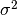 of value
- runable : does the constraint has a position p ?
- obsolete : does the value has been obtained recently ?
- usuable : runbale AND NOT obsolete
- evlauated : obsolete
C.info()
type , p , value, std , runable, usable, obsolete, evaluated
TOA , [0 0] , [ 16.667], [ 1.], 1, 1, 0, 0
type , p , value, std , runable, usable, obsolete, evaluated
TOA , [10 15] , [ 47.14], [ 1.], 1, 1, 0, 0
type , p , value, std , runable, usable, obsolete, evaluated
TOA , [ 5 28] , [ 78.457], [ 1.], 1, 1, 0, 0
type , p , value, std , runable, usable, obsolete, evaluated
TOA , [-10 -10] , [ 60.093], [ 1.], 1, 1, 0, 0
Update the CLA
C.update()
Compute the cla
C.compute()
True
show the estimated position
C.pe
array([ -4.735e-03, 4.992e+00])
to be compare with the actual position value
p
array([0, 5])
14.2. RSS¶
The RSS is a quantity which is weakly related to distance via a parametric model. The bettet the model, better would be tthe inference ab out tthe associated distance. t To model the Path Loss shadowing model is widely used.
To define the classical path loss shadowing model widely used in this context the PLSmodel class has been defined.
M = PLSmodel(f=3.0,rssnp=2.64,d0=1.0,sigrss=3.0,method='mode')
For simulation purpose : get RSS from distances (or associated delay) with the above model
toa1
16.666666666666668
M.getPL(toa1,1)
11.262571050852122
14.3. TDOA¶
Td1=TDOA(id=0,value = toa1-toa2, std = np.array([1.0]), p = np.array([pt1,pt2]))
Td2=TDOA(id=1,value = toa1-toa3, std = np.array([1.0]), p = np.array([pt1,pt3]))
Td3=TDOA(id=2,value = toa1-toa4, std = np.array([1.0]), p = np.array([pt1,pt4]))
C=CLA()
C.append(Td1)
C.append(Td2)
C.append(Td3)
C.compute()
TDOA 2.0
TDOA 2.0
TDOA 2.0
TDOA 1.5
TDOA 1.5
TDOA 1.5
TDOA 1.375
TDOA 1.375
TDOA 1.375
TDOA 1.375
TDOA 1.375
TDOA 1.375
True
C.pe
array([ 0.021, 4.987])
from IPython.core.display import HTML
def css_styling():
styles = open("../styles/custom.css", "r").read()
return HTML(styles)
css_styling()
import ConfigParser
import pylayers.util.pyutil as pyu
<matplotlib.figure.Figure at 0x4575890>
15. Network Simulation Configuration¶
PyLayers is designed to provide indoor radio channel simulation for mobile agents.
The goal is to adress mobility in indoor environement heterogeneous network, with human being carriers of a mobile User Equipement (UE) which possibly embeds several Radio Acess Technology (RAT).
Several human can be created and their motion in the environement should be as realistic as possible, because for many applications it turns out that many parameter of interest are stongly dependent of the dynamic topology of the mobile network.
In the following the configuration files for proceeding with those high level PyLayers simulation are described.
The configuration file is simulnet.ini
This file is located in $BASENAME/ini
!cat $BASENAME/ini/simulnet.ini
[Mysql]
host = localhost
user = root
passwd = sqlsql
dbname = test
dumpdb =True
[Save]
save=[]
;save=['csv','mysql','matlab','pyray','txt','ini']
savep=True
[Layout]
filename = TA-Office.ini
x_offset = 30
y_offset = 2
the_world_width = 65
the_world_height = 20
the_world_scale = 20
[Mechanics]
; update time for agent movement
mecanic_update_time = 0.1
; select how agnt choose destiantion
;'random' ; file
choose_destination = 'random'
[Network]
; refresh TOA regulary 'synchro 'or with distance 'autionomous'
Communication_mode='autonomous'
; update time for refreshing network
network_update_time = 0.1
; show nodes moving & radio link
show = False
; show in ipython .
ipython_nb_show = False
; show signature ( not fully functionnal)
show_sg = False
; show 2 tables : mecanic & network
show_table = False
; show the same information but in terminal
dispinfo = False
[Localization]
; perform localization
localization = True
; time to refresh localization
localization_update_time = 1.0
; list of used methods method = ['alg','geo']
method = ['alg']
[Simulation]
; Simulation duration
duration = 10.0
; speed ratio
speedratio = 1.
; time for refreshing tk plot ( obsolete)
show_interval = 0.5
; show scene using tk renderer ( obsolete)
showtk = False
; choose seed for random mobiliity
seed = 1
; verbose output
verbose = True
Cp = ConfigParser.ConfigParser()
Cp.read(pyu.getlong('simulnet.ini','ini'))
['/home/uguen/Bureau/P1/ini/simulnet.ini']
Simulnet.ini contains the following sections
Cp.sections()
['Mysql',
'Save',
'Layout',
'Mechanics',
'Network',
'Localization',
'Simulation']
This section define the save options.
dict(Cp.items('Save'))
{'save': '[]', 'savep': 'True'}
The savep boolean enable/disable saving of the simulation.
dict(Cp.items('Save'))['savep']
'True'
The log file which contains all traces from the dynamic are in $BASENAME/netsave
ls /home/Bureau/P1/netsave/
ls: impossible d'accéder à /home/Bureau/P1/netsave/: Aucun fichier ou dossier de ce type
15.1. Layout¶
This section allow setup the layout for the simulation
dict(Cp.items('Layout'))
{'filename': 'TA-Office.ini',
'the_world_height': '20',
'the_world_scale': '20',
'the_world_width': '65',
'x_offset': '30',
'y_offset': '2'}
Choose the used Layout for simulation
dict(Cp.items('Layout'))['filename']
'TA-Office.ini'
Setup an offset on the origin of axis
print dict(Cp.items('Layout'))['x_offset']
print dict(Cp.items('Layout'))['y_offset']
30
2
15.2. Network¶
dict(Cp.items('Network'))
{'communication_mode': "'autonomous'",
'dispinfo': 'False',
'ipython_nb_show': 'False',
'network_update_time': '0.1',
'show': 'False',
'show_sg': 'False',
'show_table': 'False'}
Setup communication mode between node:
- autonomous : the data exchange between nodes is driven by the localization layer. If more information is required to estimate the position a communication request is send to the communication stae
- synchro : the data exchange between nodes is periodic. LDPs are periodically refreshed at the network_update_time
dict(Cp.items('Network'))['communication_mode']
"'autonomous'"
Time step for the refresh network information
dict(Cp.items('Network'))['network_update_time']
'0.1'
Vizualization of the simulation using matplotlib
dict(Cp.items('Network'))['show']
'False'
Vizualization of a table summing up the data exchange of the nodes
dict(Cp.items('Network'))['show_table']
'False'
Vizualization of the simulation inside ipython .
dict(Cp.items('Network'))['ipython_nb_show']
'False'
15.3. Mechanics¶
This section allow to setup the agent movement during simulation
dict(Cp.items('Mechanics'))
{'choose_destination': "'random'", 'mecanic_update_time': '0.1'}
Setup how agent choose their target:
- random : the agnet move into the layout randomly
- file : the agent follow the sequence specified in /nodes_destination.ini
dict(Cp.items('Mechanics'))['choose_destination']
"'random'"
Time step for refreshing the mechanical layer (ground truth position)
dict(Cp.items('Mechanics'))['mecanic_update_time']
'0.1'
15.4. Localization¶
Setup Localization algorithms
dict(Cp.items('Localization'))
{'localization': 'True',
'localization_update_time': '1.0',
'method': "['alg']"}
enable/disable localizaiton of the agents
dict(Cp.items('Localization'))['localization']
'True'
Select localization methods :
- Algebraic : hétérogeneous localization algorithm
- Geometric : RGPA
dict(Cp.items('Localization'))['method']
"['alg']"
Time step for localization update
dict(Cp.items('Localization'))['localization_update_time']
'1.0'
15.5. Simulation¶
dict(Cp.items('Simulation'))
{'duration': '10.0',
'seed': '1',
'show_interval': '0.5',
'showtk': 'False',
'speedratio': '1.',
'verbose': 'True'}
Setup simulation duration in second
dict(Cp.items('Simulation'))['duration']
'10.0'
Setup random seed for simulation
dict(Cp.items('Simulation'))['seed']
'1'
Display messages during simulation
dict(Cp.items('Simulation'))['verbose']
'True'
from IPython.display import FileLink
FileLink('Mobility.ipynb')
from IPython.core.display import HTML
def css_styling():
styles = open("../styles/custom.css", "r").read()
return HTML(styles)
css_styling()
from IPython.display import Image, HTML, Latex, YouTubeVideo
import numpy as np
<matplotlib.figure.Figure at 0x55c3890>
#YouTubeVideo('1Qa6xLpU5-M')
import pylayers.mobility.trajectory as traj
from pylayers.mobility.body.body import *
from pylayers.gis.layout import *
trajectories can be imported from a simulnet simulation with the importsn method
L=Layout('TA-Office.ini')
t=traj.importsn()
The 2 following trajectories have been calculated with pylayers.simul.simulnet
plt.figure(figsize=(20,20))
f,a = L.showGs()
f,a = t[0].plot()
f,a = t[1].plot()
f,a = t[2].plot()
f,a = t[3].plot()


nbconvert Workflow.ipynb -o latex
padflatex Workflow.tex
This is a latex equation 
<matplotlib.figure.Figure at 0x3d66890>
Geomutil is a module which gathers different geometrical functions used in other modeule of pylayers.
The importation is done as below. The geoutil alias is geu
from pylayers.util.geomutil import *
from pylayers.util.plotutil import *
import shapely.geometry as shg
16. Class Polygon¶
This class is important because it implements the visibility graph, of a Polygon.
The Polygon class is a subclass of the shapely polygon class. It allows to initialize a Polygon with different object (list,np.array,sh.MultiPoint)
points = shg.MultiPoint([(0, 0), (1, 1), (2, 0), (1, 0),(0,-2)])
poly1 = Polygon(points)
poly2 = Polygon(p=[[3,4,4,3],[1,1,2,2]])
N = 7
phi = np.linspace(0,2*np.pi,N)
x = 3*np.cos(phi)+5
y = 3*np.sin(phi)+5
nppoints = np.vstack((x,y))
poly3 = Polygon(nppoints)
16.1. ploting polygons¶
fig = figure()
ax = fig.gca()
axis('off')
axis('equal')
fig,ax=poly1.plot(color='green',fig=fig,ax=ax)
fig,ax=poly2.plot(color='red',fig=fig,ax=ax)
fig,ax=poly3.plot(color='#000000',fig=fig,ax=ax)
16.2. buildGv()¶
Dertermine visibility relationships in a Polygon. Returns a graph
This function is used for determining visibility relationships in indoor environement.
figsize(8,8)
points = shg.MultiPoint([(0, 0), (0, 1), (2.5,1), (2.5, 2), \
(2.8,2), (2.8, 1.1), (3.2, 1.1), \
(3.2, 0.7), (0.4, 0.7), (0.4, 0)])
polyg = Polygon(points)
Gv = polyg.buildGv(show=True)
plt.axis('off')
(-0.5, 4.0, -0.5, 2.5)

17. Geomview classes¶
17.1. GeomVect class¶
This class is used to interact with geomview 3D viewer.
17.1.1. geomBase¶
Display a base
v1 = np.array([1,0,0])
v2 = np.array([0,1,0])
v3 = np.array([0,0,1])
M = np.vstack((v1,v2,v3))
gv = GeomVect('test')
gv.geomBase(M)
#gv.show3()
17.1.2. points¶
display a set of points
gv1 = GeomVect('test1')
gv1.points(rand(3,10))
#gv1.show3()
ndarray method converts a Polygon object to an ndarray
geo = Geomoff('test2')
pt = poly3.ndarray().T
pt1 = np.hstack((pt,np.zeros((7,1))))
This class is used in module vrml2geom
polys = [[0,1,2,3,4,5,6]]
geo.polygons(pt1,polys)
#geo.show3()
poly = [0,1,2,3,4,5,6]
geo.polygon(pt1,poly)
#geo.show3()
np.zeros((7,1))
array([[ 0.],
[ 0.],
[ 0.],
[ 0.],
[ 0.],
[ 0.],
[ 0.]])
extrem=np.array([-2,2,-2,2,-2,2])
17.2. Utility functions¶
17.2.1. angledir¶
angledir converts a 3D vector into the 2 spherical angle  ,
,
 expressed in radians
expressed in radians
s = np.array([[2,0,0],[0,2,0],[0,0,1],[1,1,1]])
angledir(s)*180/pi
array([[ 90. , 0. ],
[ 90. , 90. ],
[ 0. , 0. ],
[ 54.73561032, 45. ]])
17.2.2. linet¶
fig = figure()
axis('off')
ax = fig.gca()
p1 = np.array([0,0])
p2 = np.array([1,0])
p3 = np.array([0,1])
p4 = np.array([1,1])
ax = linet(ax,p1,p2,al=0.7,color='red',linewidth=3)
ax = linet(ax,p2,p3,al=0.8,color='blue',linewidth=2)
ax = linet(ax,p3,p4,al=0.9,color='green',linewidth=1)
ax = linet(ax,p4,p1,al=1,color='cyan',linewidth=10)

17.2.3. dptseg(p,pt,ph)¶
this function calculates distances between a set of points and a segment
pt = np.array([0,0])
ph = np.array([10,0])
p = np.array([[-1,1 ,3,4,11],[8,1,2,3,3]])
d1,d2,h = dptseg(p,pt,ph)
print d1,d2,h
[[ -1. 1. 3. 4. 11.]] [[ 11. 9. 7. 6. -1.]] [ 8. 1. 2. 3. 3.]
17.2.4. displot¶
axis('off')
axis('equal')
N = 50
pt = sp.rand(2,N)
ph = sp.rand(2,N)
f,a = displot(pt,ph)
17.2.5. ptonseg(pta,phe,pt)¶
used in select.py
pta = np.array([0,0])
phe = np.array([10,0])
pt = np.array([9,8])
p = ptonseg(pta,phe,pt)
print p
[ 9. 0.]
17.2.6. ptconvex¶
points = shg.MultiPoint([(0, 0), (0, 1), (3.2, 1), (3.2, 0.7), (0.4, 0.7), (0.4, 0)])
N = len(points)
polyg = Polygon(points)
tcc,n = polyg.ptconvex()
axis('off')
axis('equal')
k = 0
polyg.plot()
for p in points:
if tcc[k] == 1 :
plt.plot(p.x, p.y, 'o', color='red',alpha=1)
else:
plt.plot(p.x, p.y, 'o', color='blue',alpha=0.3)
k = k+1

17.2.7. intersect¶
intersect(A,B,C,D) wether or not the N segments (AB) intersects N segments (CD). The intersection is tested only for the segment of same index in the ndarray.
from pylayers.util.geomutil import *
from pylayers.util.plotutil import *
import scipy as sp
N1 = 6
N2 = 5
A = sp.rand(2,N1)
B = sp.rand(2,N1)
C = sp.rand(2,N1)
D = sp.rand(2,N1)
b1 = intersect(A,B,C,D)
b1
array([ True, False, True, False, True, False], dtype=bool)
pt1 = A[:,b1]
ph1 = B[:,b1]
pt2 = C[:,b1]
ph2 = D[:,b1]
pt3 = A[:,(1-b1).astype(bool)]
ph3 = B[:,(1-b1).astype(bool)]
pt4 = C[:,(1-b1).astype(bool)]
ph4 = D[:,(1-b1).astype(bool)]
f1,a1 = displot(pt1,ph1,'r')
f2,a2 = displot(pt2,ph2,'b')
f3,a3 = displot(pt3,ph3,'c')
f4,a4 = displot(pt4,ph4,'y')
ti = plt.title('test intersect')
b1
array([ True, False, True, False, True, False], dtype=bool)
(1-b1).astype('bool')
array([False, True, False, True, False, True], dtype=bool)
b1.all()
False
b1.any()
True
One want to evaluate all the intersection of a set of segments of
17.3. Useful functions¶
isaligned?
pts = np.array([-27.835, 10.891])
phs = np.array([-27.836, 10.926])
ptk = array([-27.833, 10.686])
phk = array([-27.835, 10.891])
isaligned(pts,phs,ptk)
True
isaligned(pts,phs,phk)
True
plot(pts[0],pts[1],'or')
plot(phs[0],phs[1],'or')
plot(ptk[0],ptk[1],'ob')
plot(phk[0],phk[1],'ob')
axis('equal')
(-27.836000000000002, -27.832500000000003, 10.65, 10.950000000000001)